Chapter 2: Descriptive Statistics¶
Introduction¶
Chapter Outline: Chapter Objectives
By the end of this chapter, the student should be able to:
- Display data graphically and interpret graphs: stemplots, histograms, and box plots.
- Recognize, describe, and calculate the measures of location of data: quartiles and percentiles.
- Recognize, describe, and calculate the measures of the center of data: mean, median, and mode.
- Recognize, describe, and calculate the measures of the spread of data: variance, standard deviation, and range.
Once you have collected data, what will you do with it? Data can be described and presented in many different formats. For example, suppose you are interested in buying a house in a particular area. You may have no clue about the house prices, so you might ask your real estate agent to give you a sample data set of prices. Looking at all the prices in the sample often is overwhelming. A better way might be to look at the median price and the variation of prices. The median and variation are just two ways that you will learn to describe data. Your agent might also provide you with a graph of the data.
In this chapter, you will study numerical and graphical ways to describe and display your data. This area of statistics is called "Descriptive Statistics." You will learn how to calculate, and even more importantly, how to interpret these measurements and graphs.
A statistical graph is a tool that helps you learn about the shape or distribution of a sample or a population. A graph can be a more effective way of presenting data than a mass of numbers because we can see where data clusters and where there are only a few data values. Newspapers and the Internet use graphs to show trends and to enable readers to compare facts and figures quickly. Statisticians often graph data first to get a picture of the data. Then, more formal tools may be applied.
Some of the types of graphs that are used to summarize and organize data are the dot plot, the bar graph, the histogram, the stem-and-leaf plot, the frequency polygon (a type of broken line graph), the pie chart, and the box plot. In this chapter, we will briefly look at stem-and-leaf plots, line graphs, and bar graphs, as well as frequency polygons, and time series graphs.
NOTE
This book contains instructions for constructing a histogram and a box plot for the TI-83+ and TI-84 calculators. The Texas Instruments (TI) website provides additional instructions for using these calculators.
2.1 Stem-and-Leaf Graphs (Stemplots), Line Graphs, and Bar Graphs¶
One simple graph, the stem-and-leaf graph or stemplot, comes from the field of exploratory data analysis. It is a good choice when the data sets are small. To create the plot, divide each observation of data into a stem and a leaf. The leaf consists of a final significant digit. For example, 23 has stem two and leaf three. The number 432 has stem 43 and leaf two. Likewise, the number 5,432 has stem 543 and leaf two. The decimal 9.3 has stem nine and leaf three. Write the stems in a vertical line from smallest to largest. Draw a vertical line to the right of the stems. Then write the leaves in increasing order next to their corresponding stem.
Example 2.1
For Professor Dean's spring pre-calculus class, scores for the first exam were as follows (smallest to largest):
33; 42; 49; 49; 53; 55; 55; 61; 63; 67; 68; 68; 69; 69; 72; 73; 74; 78; 80; 83; 88; 88; 88; 90; 92; 94; 94; 94; 94; 96; 100
Table 2.1 Stem-and-Leaf Graph
| Stem | Leaf |
|---|---|
| 3 | 3 |
| 4 | 2 9 9 |
| 5 | 3 5 5 |
| 6 | 1 3 7 8 8 9 9 |
| 7 | 2 3 4 8 |
| 8 | 0 3 8 8 8 |
| 9 | 0 2 4 4 4 4 6 |
| 10 | 0 |
The stemplot shows that most scores fell in the 60s, 70s, 80s, and 90s. Eight out of the 31 scores or approximately 26% \(\left( \frac{8}{31} \right)\) were in the 90s or 100, a fairly high number of As.
Try It
For the Park City basketball team, scores for the last 30 games were as follows (smallest to largest):
32; 32; 33; 34; 38; 40; 42; 42; 43; 44; 46; 47; 47; 48; 48; 48; 49; 50; 50; 51; 52; 52; 52; 53; 54; 56; 57; 57; 60; 61
Construct a stem plot for the data.
The stemplot is a quick way to graph data and gives an exact picture of the data. You want to look for an overall pattern and any outliers. An outlier is an observation of data that does not fit the rest of the data. It is sometimes called an extreme value. When you graph an outlier, it will appear not to fit the pattern of the graph. Some outliers are due to mistakes (for example, writing down 50 instead of 500) while others may indicate that something unusual is happening. It takes some background information to explain outliers, so we will cover them in more detail later.
Example 2.2
The data are the distances (in kilometers) from a home to local supermarkets. Create a stemplot using the data:
1.1; 1.5; 2.3; 2.5; 2.7; 3.2; 3.3; 3.3; 3.5; 3.8; 4.0; 4.2; 4.5; 4.5; 4.7; 4.8; 5.5; 5.6; 6.5; 6.7; 12.3
Do the data seem to have any concentration of values?
NOTE
The leaves are to the right of the decimal.
Solution
The value 12.3 may be an outlier. Values appear to concentrate at three and four kilometers.
Table 2.2
| Stem | Leaf |
|---|---|
| 1 | 1 5 |
| 2 | 3 5 7 |
| 3 | 2 3 3 5 8 |
| 4 | 0 2 5 5 7 8 |
| 5 | 5 6 |
| 6 | 5 7 |
| 7 | |
| 8 | |
| 9 | |
| 10 | |
| 11 | |
| 12 | 3 |
Try It
The following data show the distances (in miles) from the homes of off-campus statistics students to the college. Create a stem plot using the data and identify any outliers:
0.5; 0.7; 1.1; 1.2; 1.2; 1.3; 1.3; 1.5; 1.5; 1.7; 1.7; 1.8; 1.9; 2.0; 2.2; 2.5; 2.6; 2.8; 2.8; 2.8; 3.5; 3.8; 4.4; 4.8; 4.9; 5.2; 5.5; 5.7; 5.8; 8.0
Example 2.3
A side-by-side stem-and-leaf plot allows a comparison of the two data sets in two columns. In a side-by-side stem-and-leaf plot, two sets of leaves share the same stem. The leaves are to the left and the right of the stems. Table 2.3 and Table 2.4 show the ages of presidents at their inauguration and at their death. Construct a side-by-side stem-and-leaf plot using this data.
Table 2.3 Presidential Ages at Inauguration
| President | Age | President | Age | President | Age |
|---|---|---|---|---|---|
| Washington | 57 | Lincoln | 52 | Hoover | 54 |
| J. Adams | 61 | A. Johnson | 56 | F. Roosevelt | 51 |
| Jefferson | 57 | Grant | 46 | Truman | 60 |
| Madison | 57 | Hayes | 54 | Eisenhower | 62 |
| Monroe | 58 | Garfield | 49 | Kennedy | 43 |
| J. Q. Adams | 57 | Arthur | 51 | L. Johnson | 55 |
| Jackson | 61 | Cleveland | 47 | Nixon | 56 |
| Van Buren | 54 | B. Harrison | 55 | Ford | 61 |
| W. H. Harrison | 68 | Cleveland | 55 | Carter | 52 |
| Tyler | 51 | McKinley | 54 | Reagan | 69 |
| Polk | 49 | T. Roosevelt | 42 | G.H.W. Bush | 64 |
| Taylor | 64 | Taft | 51 | Clinton | 47 |
| Fillmore | 50 | Wilson | 56 | G. W. Bush | 54 |
| Pierce | 48 | Harding | 55 | Obama | 47 |
| Buchanan | 65 | Coolidge | 51 |
Table 2.4 Presidential Age at Death
| President | Age | President | Age | President | Age |
|---|---|---|---|---|---|
| Washington | 67 | Lincoln | 56 | Hoover | 90 |
| J. Adams | 90 | A. Johnson | 66 | F. Roosevelt | 63 |
| Jefferson | 83 | Grant | 63 | Truman | 88 |
| Madison | 85 | Hayes | 70 | Eisenhower | 78 |
| Monroe | 73 | Garfield | 49 | Kennedy | 46 |
| J. Q. Adams | 80 | Arthur | 56 | L. Johnson | 64 |
| Jackson | 78 | Cleveland | 71 | Nixon | 81 |
| Van Buren | 79 | B. Harrison | 67 | Ford | 93 |
| W. H. Harrison | 68 | Cleveland | 71 | Reagan | 93 |
| Tyler | 71 | McKinley | 58 | ||
| Polk | 53 | T. Roosevelt | 60 | ||
| Taylor | 65 | Taft | 72 | ||
| Fillmore | 74 | Wilson | 67 | ||
| Pierce | 64 | Harding | 57 | ||
| Buchanan | 77 | Coolidge | 60 |
Solution
Table 2.5
| Ages at Inauguration | Ages at Death | |
|---|---|---|
| 9 9 8 7 7 7 6 3 2 | 4 | 6 9 |
| 8 7 7 7 7 6 6 6 5 5 5 5 4 4 4 4 4 2 2 1 1 1 1 1 0 | 5 | 3 6 6 7 7 8 |
| 9 8 5 4 4 2 1 1 1 0 | 6 | 0 0 3 3 4 4 5 6 7 7 7 8 |
| 7 | 0 1 1 1 2 3 4 7 8 8 9 | |
| 8 | 0 1 3 5 8 | |
| 9 | 0 0 3 3 |
Try It
The table shows the number of wins and losses the Atlanta Hawks have had in 42 seasons. Create a side-by-side stemand-leaf plot of these wins and losses.
Table 2.6
| Losses | Wins | Season | Losses | Wins | Season |
|---|---|---|---|---|---|
| 34 | 48 | 1 | 41 | 41 | 22 |
| 34 | 48 | 2 | 39 | 43 | 23 |
| 46 | 36 | 3 | 44 | 38 | 24 |
| 46 | 36 | 4 | 39 | 43 | 25 |
| 36 | 46 | 5 | 25 | 57 | 26 |
| 47 | 35 | 6 | 40 | 42 | 27 |
| 51 | 31 | 7 | 36 | 46 | 28 |
| 53 | 29 | 8 | 26 | 56 | 29 |
| 51 | 31 | 9 | 32 | 50 | 30 |
| 41 | 41 | 10 | 19 | 31 | 31 |
| 36 | 46 | 11 | 54 | 28 | 32 |
| 32 | 50 | 12 | 57 | 25 | 33 |
| 51 | 31 | 13 | 49 | 33 | 34 |
| 40 | 42 | 14 | 47 | 35 | 35 |
| 39 | 43 | 15 | 54 | 28 | 36 |
| 42 | 40 | 16 | 69 | 13 | 37 |
| 48 | 34 | 17 | 56 | 26 | 38 |
| 32 | 50 | 18 | 52 | 30 | 39 |
| 25 | 57 | 19 | 45 | 37 | 40 |
| 32 | 50 | 20 | 35 | 47 | 41 |
| 30 | 52 | 21 | 29 | 53 | 42 |
Another type of graph that is useful for specific data values is a line graph. In the particular line graph shown in Example 2.4, the x-axis (horizontal axis) consists of data values and the y-axis (vertical axis) consists of frequency points. The frequency points are connected using line segments.
Example 2.4
In a survey, 40 parents were asked how many times per week a teenager must be reminded to do their chores. The results are shown in Table 2.7 and in Figure 2.2.
Table 2.7
| Number of times teenager is reminded | Frequency |
|---|---|
| 0 | 2 |
| 1 | 5 |
| 2 | 8 |
| 3 | 14 |
| 4 | 7 |
| 5 | 4 |
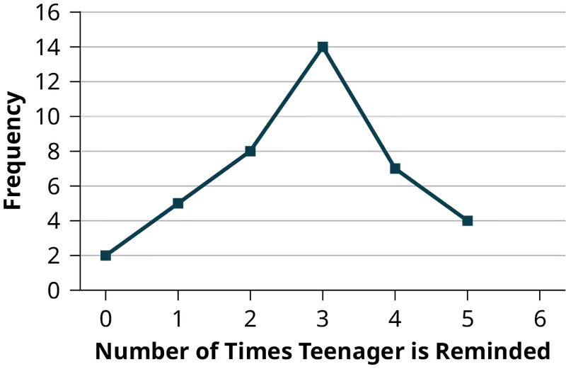
Try It
In a survey, 40 people were asked how many times per year they had their car in the shop for repairs. The results are shown in Table 2.8. Construct a line graph.
Table 2.8
| Number of times in shop | Frequency |
|---|---|
| 0 | 7 |
| 1 | 10 |
| 2 | 14 |
| 3 | 9 |
Bar graphs consist of bars that are separated from each other. The bars can be rectangles or they can be rectangular boxes (used in three-dimensional plots), and they can be vertical or horizontal. The bar graph shown in Example 2.5 has age groups represented on the x-axis and proportions on the y-axis.
Example 2.5
The percentage of U.S.-based TikTok users by age is shown in Table 2.9. Construct a bar graph using this data.
Table 2.9
| Age groups | Proportion (%) of TikTok users |
|---|---|
| 10–19 | 32.5% |
| 20–29 | 29.5% |
| 30–39 | 16.4% |
| 40–49 | 13.9% |
| 50+ | 7.1% |
Solution
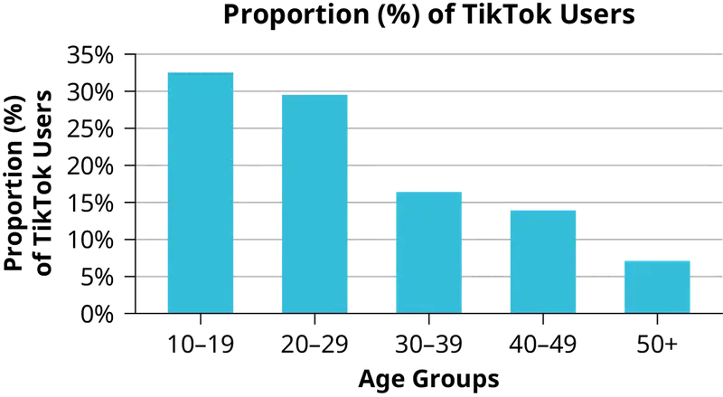
Try It
The population in Park City is made up of children, working-age adults, and retirees. Table 2.10 shows the three age groups, the number of people in the town from each age group, and the proportion (%) of people in each age group. Construct a bar graph showing the proportions.
Table 2.10
| Age groups | Number of people | Proportion of population |
|---|---|---|
| Children | 67,059 | 19% |
| Working-age adults | 152,198 | 43% |
| Retirees | 131,662 | 38% |
Example 2.6
The columns in Table 2.11 show the projected data for the year 2030 for the number and percentages of high school graduates by geographic region in the United States. Create a bar graph for this data with the geographic region (qualitative data) on the x-axis and the percentage of high school data (quantitative data) on the y-axis.
Table 2.11
| Region | Number of Graduates | Percentage of Graduates |
|---|---|---|
| Northeast | 517,720 | 16.1% |
| Midwest | 695,170 | 21.6% |
| South | 1,253,540 | 39.0% |
| West | 749,400 | 23.3% |
Solution
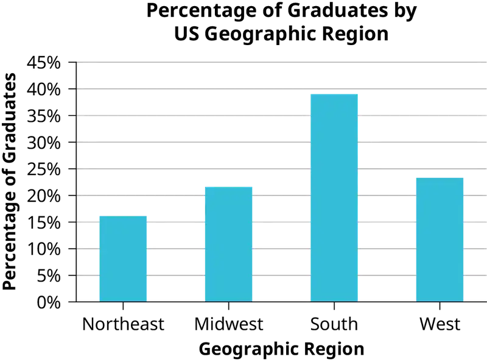
Try It
Park city is broken down into six voting districts. The table shows the percent of the total registered voter population that lives in each district as well as the percent total of the entire population that lives in each district. Construct a bar graph that shows the registered voter population by district.
Table 2.12
| District | Registered voter population | Overall city population |
|---|---|---|
| 1 | 15.5% | 19.4% |
| 2 | 12.2% | 15.6% |
| 3 | 9.8% | 9.0% |
| 4 | 17.4% | 18.5% |
| 5 | 22.8% | 20.7% |
| 6 | 22.3% | 16.8% |
2.2 Histograms, Frequency Polygons, and Time Series Graphs¶
For most of the work you do in this book, you will use a histogram to display the data. One advantage of a histogram is that it can readily display large data sets. A rule of thumb is to use a histogram when the data set consists of 100 values or more.
A histogram consists of contiguous (adjoining) boxes. It has both a horizontal axis and a vertical axis. The horizontal axis is labeled with what the data represents (for instance, distance from your home to school). The vertical axis is labeled either frequency or relative frequency (or percent frequency or probability). The graph will have the same shape with either label. The histogram (like the stemplot) can give you the shape of the data, the center, and the spread of the data.
The relative frequency is equal to the frequency for an observed value of the data divided by the total number of data values in the sample. (Remember, frequency is defined as the number of times an answer occurs.) If:
- f = frequency
- n = total number of data values (or the sum of the individual frequencies), and
- RF = relative frequency,
then:
For example, if three students in an English class of 40 students received from 90% to 100%, then, f = 3, n = 40, and RF = \(\frac{f}{n}\) = \(\frac{3}{40}\) = 0.075. 7.5% of the students received 90–100%. 90–100% are quantitative measures.
To construct a histogram, first decide how many bars or intervals, also called classes, represent the data. Many histograms consist of five to 15 bars or classes for clarity. The number of bars needs to be chosen. Choose a starting point for the first interval to be less than the smallest data value. A convenient starting point is a lower value carried out to one more decimal place than the value with the most decimal places. For example, if the value with the most decimal places is 6.1 and this is the smallest value, a convenient starting point is 6.05 (6.1 – 0.05 = 6.05). We say that 6.05 has more precision. If the value with the most decimal places is 2.23 and the lowest value is 1.5, a convenient starting point is 1.495 (1.5 – 0.005 = 1.495). If the value with the most decimal places is 3.234 and the lowest value is 1.0, a convenient starting point is 0.9995 (1.0 – 0.0005 = 0.9995). If all the data happen to be integers and the smallest value is two, then a convenient starting point is 1.5 (2 – 0.5 = 1.5). Also, when the starting point and other boundaries are carried to one additional decimal place, no data value will fall on a boundary. The next two examples go into detail about how to construct a histogram using continuous data and how to create a histogram using discrete data.
Example 2.7
The following data are the heights (in inches to the nearest half inch) of 100 semiprofessional soccer players. The heights are continuous data, since height is measured.
60; 60.5; 61; 61; 61.5
63.5; 63.5; 63.5
64; 64; 64; 64; 64; 64; 64; 64.5; 64.5; 64.5; 64.5; 64.5; 64.5; 64.5; 64.5
66; 66; 66; 66; 66; 66; 66; 66; 66; 66; 66.5; 66.5; 66.5; 66.5; 66.5; 66.5; 66.5; 66.5; 66.5; 66.5; 66.5; 67; 67; 67; 67; 67; 67; 67; 67; 67; 67; 67; 67; 67.5; 67.5; 67.5; 67.5; 67.5; 67.5; 67.5
68; 68; 69; 69; 69; 69; 69; 69; 69; 69; 69; 69; 69.5; 69.5; 69.5; 69.5; 69.5
70; 70; 70; 70; 70; 70; 70.5; 70.5; 70.5; 71; 71; 71
72; 72; 72; 72.5; 72.5; 73; 73.5
74
The smallest data value is 60. Since the data with the most decimal places has one decimal (for instance, 61.5), we want our starting point to have two decimal places. Since the numbers 0.5, 0.05, 0.005, etc. are convenient numbers, use 0.05 and subtract it from 60, the smallest value, for the convenient starting point.
60 – 0.05 = 59.95 which is more precise than, say, 61.5 by one decimal place. The starting point is, then, 59.95.
The largest value is 74, so 74 + 0.05 = 74.05 is the ending value.
Next, calculate the width of each bar or class interval. To calculate this width, subtract the starting point from the ending value and divide by the number of bars (you must choose the number of bars you desire). Suppose you choose eight bars.
NOTE
We will round up to two and make each bar or class interval two units wide. Rounding up to two is one way to prevent a value from falling on a boundary. Rounding to the next number is often necessary even if it goes against the standard rules of rounding. For this example, using 1.76 as the width would also work. A guideline that is followed by some for the number of bars or class intervals is to take the square root of the number of data values and then round to the nearest whole number, if necessary. For example, if there are 150 values of data, take the square root of 150 and round to 12 bars or intervals.
The boundaries are:
- 59.95
- 59.95 + 2 = 61.95
- 61.95 + 2 = 63.95
- 63.95 + 2 = 65.95
- 65.95 + 2 = 67.95
- 67.95 + 2 = 69.95
- 69.95 + 2 = 71.95
- 71.95 + 2 = 73.95
- 73.95 + 2 = 75.95
The heights 60 through 61.5 inches are in the interval 59.95–61.95. The heights that are 63.5 are in the interval 61.95–63.95. The heights that are 64 through 64.5 are in the interval 63.95–65.95. The heights 66 through 67.5 are in the interval 65.95–67.95. The heights 68 through 69.5 are in the interval 67.95–69.95. The heights 70 through 71 are in the interval 69.95–71.95. The heights 72 through 73.5 are in the interval 71.95–73.95. The height 74 is in the interval 73.95–75.95.
The following histogram displays the heights on the x-axis and relative frequency on the y-axis.
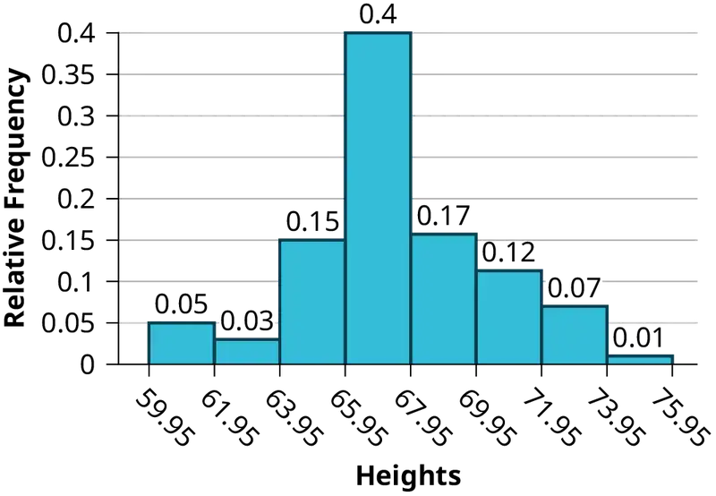
Try It
The following data are the shoe sizes of 50 students. The sizes are discrete data since shoe size is measured in whole and half units only. Construct a histogram and calculate the width of each bar or class interval. Suppose you choose six bars.
9; 9; 9.5; 9.5; 10; 10; 10; 10; 10; 10; 10.5; 10.5; 10.5; 10.5; 10.5; 10.5; 10.5; 10.5
11; 11; 11; 11; 11; 11; 11; 11; 11; 11; 11; 11; 11; 11.5; 11.5; 11.5; 11.5; 11.5; 11.5; 11.5
12; 12; 12; 12; 12; 12; 12; 12.5; 12.5; 12.5; 12.5; 14
Example 2.8
Create a histogram for the following data: the number of books bought by 50 part-time college students at ABC College. The number of books is discrete data, since books are counted.
1; 1; 1; 1; 1; 1; 1; 1; 1; 1; 1
2; 2; 2; 2; 2; 2; 2; 2; 2; 2
3; 3; 3; 3; 3; 3; 3; 3; 3; 3; 3; 3; 3; 3; 3; 3
4; 4; 4; 4; 4; 4
5; 5; 5; 5; 5
6; 6
Eleven students buy one book. Ten students buy two books. Sixteen students buy three books. Six students buy four books. Five students buy five books. Two students buy six books.
Because the data are integers, subtract 0.5 from 1, the smallest data value and add 0.5 to 6, the largest data value. Then the starting point is 0.5 and the ending value is 6.5.
Next, calculate the width of each bar or class interval. If the data are discrete and there are not too many different values, a width that places the data values in the middle of the bar or class interval is the most convenient. Since the data consist of the numbers 1, 2, 3, 4, 5, 6, and the starting point is 0.5, a width of one places the 1 in the middle of the interval from 0.5 to 1.5, the 2 in the middle of the interval from 1.5 to 2.5, the 3 in the middle of the interval from 2.5 to 3.5, the 4 in the middle of the interval from _______ to _______, the 5 in the middle of the interval from _______ to _______, and the _______ in the middle of the interval from _______ to _______ .
Solution
- 3.5 to 4.5
- 4.5 to 5.5
- 6
- 5.5 to 6.5
Calculate the number of bars as follows:
where 1 is the width of a bar. Therefore, bars = 6.
The following histogram displays the number of books on the x-axis and the frequency on the y-axis.
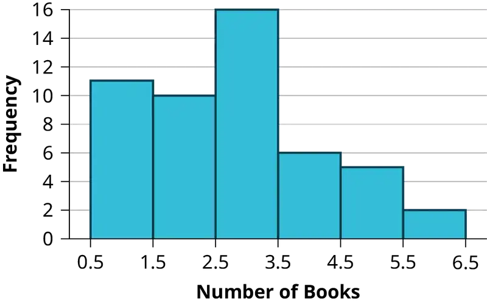
Using the Calculator
Go to Appendix G NOTEs for the TI-83, 83+, 84, 84+ Calculators. There are calculator instructions for entering data and for creating a customized histogram. Create the histogram for Example 2.8.
- Press Y=. Press CLEAR to delete any equations.
- Press
STAT 1:EDIT. IfL1has data in it, arrow up into the nameL1, press CLEAR and then arrow down. If necessary, do the same forL2. - Into
L1, enter 1, 2, 3, 4, 5, 6. - Into
L2, enter 11, 10, 16, 6, 5, 2. - Press WINDOW. Set
Xmin = .5,Xmax = 6.5,Xscl = (6.5 – .5)/6,Ymin = –1,Ymax = 20,Yscl = 1,Xres = 1. - Press 2nd Y=. Start by pressing
4:PlotsoffENTER. - Press 2nd Y=. Press
1:Plot1. Press ENTER. Arrow down to TYPE. Arrow to the 3rd picture (histogram). Press ENTER. - Arrow down to Xlist: Enter L1 (2nd 1). Arrow down to Freq. Enter L2 (2nd 2).
- Press GRAPH.
- Use the TRACE key and the arrow keys to examine the histogram.
Try It
The following data are the number of sports played by 50 student athletes. The number of sports is discrete data since sports are counted.
1; 1; 1; 1; 1; 1; 1; 1; 1; 1; 1; 1; 1; 1; 1; 1; 1; 1; 1; 1
2; 2; 2; 2; 2; 2; 2; 2; 2; 2; 2; 2; 2; 2; 2; 2; 2; 2; 2; 2; 2; 2
3; 3; 3; 3; 3; 3; 3; 3
20 student athletes play one sport. 22 student athletes play two sports. Eight student athletes play three sports.
Fill in the blanks for the following sentence. Since the data consist of the numbers 1, 2, 3, and the starting point is 0.5, a width of one places the 1 in the middle of the interval 0.5 to _____, the 2 in the middle of the interval from _____ to _____, and the 3 in the middle of the interval from _____ to _____.
Example 2.9
Using this data set, construct a histogram.
Table 2.13
| Number of Hours My Classmates Spent Playing Video Games on Weekends | ||||
|---|---|---|---|---|
| 9.95 | 10 | 2.25 | 16.75 | 0 |
| 19.5 | 22.5 | 7.5 | 15 | 12.75 |
| 5.5 | 11 | 10 | 20.75 | 17.5 |
| 23 | 21.9 | 24 | 23.75 | 18 |
| 20 | 15 | 22.9 | 18.8 | 20.5 |
Solution
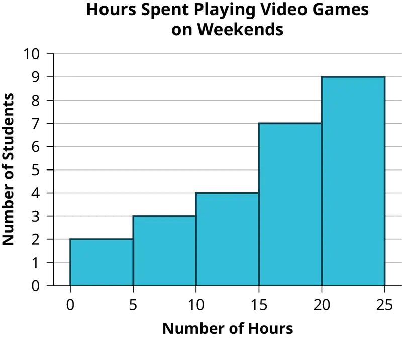
Some values in this data set fall on boundaries for the class intervals. A value is counted in a class interval if it falls on the left boundary, but not if it falls on the right boundary. Different researchers may set up histograms for the same data in different ways. There is more than one correct way to set up a histogram.
Try It
The following data represent the number of employees at various restaurants in New York City. Using this data, create a histogram.
22
35
15
26
40
28
18
20
25
34
39
42
24
22
19
27
22
34
40
20
38
and 28
Use 10–19 as the first interval.
Collaborative Exercise
Count the money (bills and change) in your pocket or purse. Your instructor will record the amounts. As a class, construct a histogram displaying the data. Discuss how many intervals you think is appropriate. You may want to experiment with the number of intervals.
Frequency Polygons¶
Frequency polygons are analogous to line graphs, and just as line graphs make continuous data visually easy to interpret, so too do frequency polygons.
To construct a frequency polygon, first examine the data and decide on the number of intervals, or class intervals, to use on the x-axis and y-axis. After choosing the appropriate ranges, begin plotting the data points. After all the points are plotted, draw line segments to connect them.
Example 2.10
A frequency polygon was constructed from the frequency table below.
Table 2.14
| Frequency Distribution for Calculus Final Test Scores | |||
|---|---|---|---|
| Lower Bound | Upper Bound | Frequency | Cumulative Frequency |
| 49.5 | 59.5 | 5 | 5 |
| 59.5 | 69.5 | 10 | 15 |
| 69.5 | 79.5 | 30 | 45 |
| 79.5 | 89.5 | 40 | 85 |
| 89.5 | 99.5 | 15 | 100 |
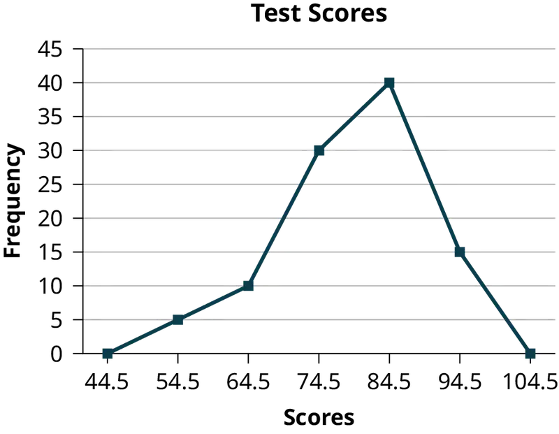
The first label on the x-axis is 44.5. This represents an interval extending from 39.5 to 49.5. Since the lowest test score is 54.5, this interval is used only to allow the graph to touch the x-axis. The point labeled 54.5 represents the next interval, or the first “real” interval from the table, and contains five scores. This reasoning is followed for each of the remaining intervals with the point 104.5 representing the interval from 99.5 to 109.5. Again, this interval contains no data and is only used so that the graph will touch the x-axis. Looking at the graph, we say that this distribution is skewed because one side of the graph does not mirror the other side.
Try It
Construct a frequency polygon of U.S. Presidents’ ages at inauguration shown in Table 2.15.
Table 2.15
| Age at Inauguration | Frequency |
|---|---|
| 41.5–46.5 | 4 |
| 46.5–51.5 | 11 |
| 51.5–56.5 | 14 |
| 56.5–61.5 | 9 |
| 61.5–66.5 | 4 |
| 66.5–71.5 | 2 |
Frequency polygons are useful for comparing distributions. This is achieved by overlaying the frequency polygons drawn for different data sets.
Example 2.11
We will construct an overlay frequency polygon comparing the scores from Example 2.10 with the students’ final numeric grade.
Table 2.16
| Frequency Distribution for Calculus Final Test Scores | |||
|---|---|---|---|
| Lower Bound | Upper Bound | Frequency | Cumulative Frequency |
| 49.5 | 59.5 | 5 | 5 |
| 59.5 | 69.5 | 10 | 15 |
| 69.5 | 79.5 | 30 | 45 |
| 79.5 | 89.5 | 40 | 85 |
| 89.5 | 99.5 | 15 | 100 |
Table 2.17
| Frequency Distribution for Calculus Final Grades | |||
|---|---|---|---|
| Lower Bound | Upper Bound | Frequency | Cumulative Frequency |
| 49.5 | 59.5 | 10 | 10 |
| 59.5 | 69.5 | 10 | 20 |
| 69.5 | 79.5 | 30 | 50 |
| 79.5 | 89.5 | 45 | 95 |
| 89.5 | 99.5 | 5 | 100 |
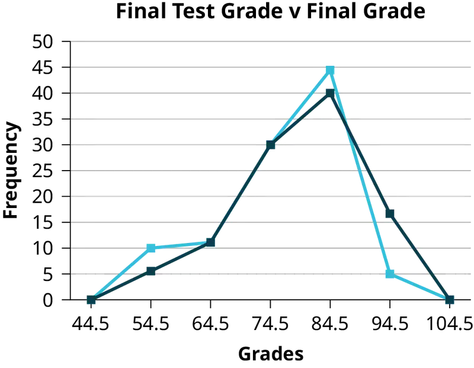
Try It
We will construct an overlay frequency polygon comparing the scores from Example 2.11 with the students’ final test scores in algebra.
Table 2.18
| Frequency Distribution for Algebra Final Test Scores | |||
|---|---|---|---|
| Lower Bound | Upper Bound | Frequency | Cumulative Frequency |
| 49.5 | 59.5 | 10 | 10 |
| 59.5 | 69.5 | 5 | 15 |
| 69.5 | 79.5 | 40 | 55 |
| 79.5 | 89.5 | 35 | 90 |
| 89.5 | 99.5 | 10 | 100 |
Answer
Calculus Test Scores v Algebra Test Scores
Image Insert
Constructing a Time Series Graph¶
Suppose that we want to study the temperature range of a region for an entire month. Every day at noon we note the temperature and write this down in a log. A variety of statistical studies could be done with this data. We could find the mean or the median temperature for the month. We could construct a histogram displaying the number of days that temperatures reach a certain range of values. However, all of these methods ignore a portion of the data that we have collected.
One feature of the data that we may want to consider is that of time. Since each date is paired with the temperature reading for the day, we don‘t have to think of the data as being random. We can instead use the times given to impose a chronological order on the data. A graph that recognizes this ordering and displays the changing temperature as the month progresses is called a time series graph.
To construct a time series graph, we must look at both pieces of our paired data set. We start with a standard Cartesian coordinate system. The horizontal axis is used to plot the date or time increments, and the vertical axis is used to plot the values of the variable that we are measuring. By doing this, we make each point on the graph correspond to a date and a measured quantity. The points on the graph are typically connected by straight lines in the order in which they occur.
Example 2.12
The following data shows the Annual Consumer Price Index, each month, for ten years. Construct a time series graph for the Annual Consumer Price Index data only.
Table 2.19
| Year | Jan | Feb | Mar | Apr | May | Jun | Jul |
|---|---|---|---|---|---|---|---|
| 1 | 181.7 | 183.1 | 184.2 | 183.8 | 183.5 | 183.7 | 183.9 |
| 2 | 185.2 | 186.2 | 187.4 | 188.0 | 189.1 | 189.7 | 189.4 |
| 3 | 190.7 | 191.8 | 193.3 | 194.6 | 194.4 | 194.5 | 195.4 |
| 4 | 198.3 | 198.7 | 199.8 | 201.5 | 202.5 | 202.9 | 203.5 |
| 5 | 202.416 | 203.499 | 205.352 | 206.686 | 207.949 | 208.352 | 208.299 |
| 6 | 211.080 | 211.693 | 213.528 | 214.823 | 216.632 | 218.815 | 219.964 |
| 7 | 211.143 | 212.193 | 212.709 | 213.240 | 213.856 | 215.693 | 215.351 |
| 8 | 216.687 | 216.741 | 217.631 | 218.009 | 218.178 | 217.965 | 218.011 |
| 9 | 220.223 | 221.309 | 223.467 | 224.906 | 225.964 | 225.722 | 225.922 |
| 10 | 226.665 | 227.663 | 229.392 | 230.085 | 229.815 | 229.478 | 229.104 |
Table 2.20
| Year | Aug | Sep | Oct | Nov | Dec | Annual |
|---|---|---|---|---|---|---|
| 1 | 184.6 | 185.2 | 185.0 | 184.5 | 184.3 | 184.0 |
| 2 | 189.5 | 189.9 | 190.9 | 191.0 | 190.3 | 188.9 |
| 3 | 196.4 | 198.8 | 199.2 | 197.6 | 196.8 | 195.3 |
| 4 | 203.9 | 202.9 | 201.8 | 201.5 | 201.8 | 201.6 |
| 5 | 207.917 | 208.490 | 208.936 | 210.177 | 210.036 | 207.342 |
| 6 | 219.086 | 218.783 | 216.573 | 212.425 | 210.228 | 215.303 |
| 7 | 215.834 | 215.969 | 216.177 | 216.330 | 215.949 | 214.537 |
| 8 | 218.312 | 218.439 | 218.711 | 218.803 | 219.179 | 218.056 |
| 9 | 226.545 | 226.889 | 226.421 | 226.230 | 225.672 | 224.939 |
| 10 | 230.379 | 231.407 | 231.317 | 230.221 | 229.601 | 229.594 |
Solution
Try It
The following table is a portion of a data set from www.worldbank.org. Use the table to construct a time series graph for CO2 emissions for the United States.
Table 2.21
| CO2 Emissions | |||
|---|---|---|---|
| Year | Ukraine | United Kingdom | United States |
| 1 | 352,259 | 540,640 | 5,681,664 |
| 2 | 343,121 | 540,409 | 5,790,761 |
| 3 | 339,029 | 541,990 | 5,826,394 |
| 4 | 327,797 | 542,045 | 5,737,615 |
| 5 | 328,357 | 528,631 | 5,828,697 |
| 6 | 323,657 | 522,247 | 5,656,839 |
| 7 | 272,176 | 474,579 | 5,299,563 |
Uses of a Time Series Graph¶
Time series graphs are important tools in various applications of statistics. When recording values of the same variable over an extended period of time, sometimes it is difficult to discern any trend or pattern. However, once the same data points are displayed graphically, some features jump out. Time series graphs make trends easy to spot.
How NOT to Lie with Statistics¶
It is important to remember that the very reason we develop a variety of methods to present data is to develop insights into the subject of what the observations represent. We want to get a "sense" of the data. Are the observations all very much alike or are they spread across a wide range of values, are they bunched at one end of the spectrum or are they distributed evenly and so on. We are trying to get a visual picture of the numerical data. Shortly we will develop formal mathematical measures of the data, but our visual graphical presentation can say much. It can, unfortunately, also say much that is distracting, confusing and simply wrong in terms of the impression the visual leaves. Many years ago Darrell Huff wrote the book How to Lie with Statistics. It has been through 25 plus printings and sold more than one and one-half million copies. His perspective was a harsh one and used many actual examples that were designed to mislead. He wanted to make people aware of such deception, but perhaps more importantly to educate so that others do not make the same errors inadvertently.
Again, the goal is to enlighten with visuals that tell the story of the data. Pie charts have a number of common problems when used to convey the message of the data. Too many pieces of the pie overwhelm the reader. More than perhaps five or six categories ought to give an idea of the relative importance of each piece. This is after all the goal of a pie chart, what subset matters most relative to the others. If there are more components than this then perhaps an alternative approach would be better or perhaps some can be consolidated into an "other" category. Pie charts cannot show changes over time, although we see this attempted all too often. In federal, state, and city finance documents pie charts are often presented to show the components of revenue available to the governing body for appropriation: income tax, sales tax motor vehicle taxes and so on. In and of itself this is interesting information and can be nicely done with a pie chart. The error occurs when two years are set side-by-side. Because the total revenues change year to year, but the size of the pie is fixed, no real information is provided and the relative size of each piece of the pie cannot be meaningfully compared.
Histograms can be very helpful in understanding the data. Properly presented, they can be a quick visual way to present probabilities of different categories by the simple visual of comparing relative areas in each category. Here the error, purposeful or not, is to vary the width of the categories. This of course makes comparison to the other categories impossible. It does embellish the importance of the category with the expanded width because it has a greater area, inappropriately, and thus visually "says" that that category has a higher probability of occurrence.
Time series graphs perhaps are the most abused. A plot of some variable across time should never be presented on axes that change part way across the page either in the vertical or horizontal dimension. Perhaps the time frame is changed from years to months. Perhaps this is to save space or because monthly data was not available for early years. In either case this confounds the presentation and destroys any value of the graph. If this is not done to purposefully confuse the reader, then it certainly is either lazy or sloppy work.
Changing the units of measurement of the axis can smooth out a drop or accentuate one. If you want to show large changes, then measure the variable in small units, penny rather than thousands of dollars. And of course to continue the fraud, be sure that the axis does not begin at zero, zero. If it begins at zero, zero, then it becomes apparent that the axis has been manipulated.
Perhaps you have a client that is concerned with the volatility of the portfolio you manage. An easy way to present the data is to use long time periods on the time series graph. Use months or better, quarters rather than daily or weekly data. If that doesn't get the volatility down then spread the time axis relative to the rate of return or portfolio valuation axis. If you want to show "quick" dramatic growth, then shrink the time axis. Any positive growth will show visually "high" growth rates. Do note that if the growth is negative then this trick will show the portfolio is collapsing at a dramatic rate.
Again, the goal of descriptive statistics is to convey meaningful visuals that tell the story of the data. Purposeful manipulation is fraud and unethical at the worst, but even at its best, making these type of errors will lead to confusion on the part of the analysis.
2.3 Measures of the Location of the Data¶
The common measures of location are quartiles and percentiles.
Quartiles divide an ordered data set into four equal parts. The three quartiles of a data set are labeled as Q1, Q2, and Q3.
- About one-fourth of the data falls on or below the first quartile Q1.
- About one-half of the data falls on or below the second quartile Q2.
- About three-fourths of the data falls on or below the third quartile Q3.
In the same way, percentiles divide a data set into 100 equal parts.
To calculate quartiles and percentiles, the data must be ordered from smallest to largest. Quartiles divide ordered data into quarters. Percentiles divide ordered data into hundredths. To score in the 90th percentile of an exam does not mean, necessarily, that you received 90% on a test. It means that 90% of test scores are the same or less than your score and 10% of the test scores are the same or greater than your test score.
Percentiles are useful for comparing values. For this reason, universities and colleges use percentiles extensively. One instance in which colleges and universities use percentiles is when SAT results are used to determine a minimum testing score that will be used as an acceptance factor. For example, suppose Duke accepts SAT scores at or above the 75th percentile. That translates into a score of at least 1220.
Percentiles are mostly used with very large populations. Therefore, if you were to say that 90% of the test scores are less (and not the same or less) than your score, it would be acceptable because removing one particular data value is not significant.
The median is a number that measures the "center" of the data. You can think of the median as the "middle value," but it does not actually have to be one of the observed values. It is a number that separates ordered data into halves. Half the values are the same number or smaller than the median, and half the values are the same number or larger. For example, consider the following data.
1; 11.5; 6; 7.2; 4; 8; 9; 10; 6.8; 8.3; 2; 2; 10; 1
Ordered from smallest to largest:
1; 1; 2; 2; 4; 6; 6.8; 7.2; 8; 8.3; 9; 10; 10; 11.5
Since there are 14 observations, the median is between the seventh value, 6.8, and the eighth value, 7.2. To find the median, add the two values together and divide by two.
The median is seven. Half of the values are smaller than seven and half of the values are larger than seven.
Quartiles are numbers that separate the data into quarters. Quartiles may or may not be part of the data. To find the quartiles, first find the median or second quartile. The first quartile, Q1, is the middle value of the lower half of the data, and the third quartile, Q3, is the middle value, or median, of the upper half of the data. To get the idea, consider the same data set:
1; 1; 2; 2; 4; 6; 6.8; 7.2; 8; 8.3; 9; 10; 10; 11.5
The median or second quartile is seven. The lower half of the data are 1, 1, 2, 2, 4, 6, 6.8. The middle value of the lower half is two.
1; 1; 2; 2; 4; 6; 6.8
The number two, which is part of the data, is the first quartile. One-fourth of the entire sets of values are the same as or less than two and three-fourths of the values are more than two.
The upper half of the data is 7.2, 8, 8.3, 9, 10, 10, 11.5. The middle value of the upper half is nine.
The third quartile, Q3, is nine. Three-fourths (75%) of the ordered data set are less than nine. One-fourth (25%) of the ordered data set are greater than nine. The third quartile is part of the data set in this example.
The interquartile range is a number that indicates the spread of the middle half or the middle 50% of the data. It is the difference between the third quartile (Q3) and the first quartile (Q1).
IQR = Q3 – Q1
The IQR can help to determine potential outliers. A value is suspected to be a potential outlier if it is less than (1.5)(IQR) below the first quartile or more than (1.5)(IQR) above the third quartile. Potential outliers always require further investigation.
NOTE
A potential outlier is a data point that is significantly different from the other data points. These special data points may be errors or some kind of abnormality or they may be a key to understanding the data.
Example 2.13
For the following 13 real estate prices, calculate the IQR and determine if any prices are potential outliers. Prices are in dollars.
389,950; 230,500; 158,000; 479,000; 639,000; 114,950; 5,500,000; 387,000; 659,000; 529,000; 575,000; 488,800; 1,095,000
Solution
Order the data from smallest to largest.
114,950; 158,000; 230,500; 387,000; 389,950; 479,000; 488,800; 529,000; 575,000; 639,000; 659,000; 1,095,000; 5,500,000
M = 488,800
Q1 = \(\frac{\text{230,500 + 387,000}}{2}\) = 308,750
Q3 = \(\frac{\text{639,000 + 659,000}}{2}\) = 649,000
IQR = 649,000 – 308,750 = 340,250
(1.5)(IQR) = (1.5)(340,250) = 510,375
Q1 – (1.5)(IQR) = 308,750 – 510,375 = –201,625
Q3 + (1.5)(IQR) = 649,000 + 510,375 = 1,159,375
No house price is less than –201,625. However, 5,500,000 is more than 1,159,375. Therefore, 5,500,000 is a potential outlier.
Try It
For the following 11 salaries, calculate the IQR and determine if any salaries are outliers. The salaries are in dollars.
$33,000
$64,500
$28,000
$54,000
$72,000
$68,500
$69,000
$42,000
$54,000
$120,000
$40,500
Example 2.14
Test scores for a college statistics class held during the day are:
99; 56; 78; 55.5; 32; 90; 80; 81; 56; 59; 45; 77; 84.5; 84; 70; 72; 68; 32; 79; 90
Test scores for a college statistics class held during the evening are:
98; 78; 68; 83; 81; 89; 88; 76; 65; 45; 98; 90; 80; 84.5; 85; 79; 78; 98; 90; 79; 81; 25.5
For the two data sets, find the following:
- The interquartile range. Compare the two interquartile ranges.
- Any outliers in either set.
Solution
The five number summary for the day and night classes is
Table 2.22
| Minimum | Q1 | Median | Q3 | Maximum | |
|---|---|---|---|---|---|
| Day | 32 | 56 | 74.5 | 82.5 | 99 |
| Night | 25.5 | 78 | 81 | 89 | 98 |
a. The IQR for the day group is Q3 – Q1 = 82.5 – 56 = 26.5
The IQR for the night group is Q3 – Q1 = 89 – 78 = 11
The interquartile range (the spread or variability) for the day class is larger than the night class IQR. This suggests more variation will be found in the day class’s class test scores.
b. Day class outliers are found using the IQR times 1.5 rule. So,
Q1 - IQR(1.5) = 56 – 26.5(1.5) = 16.25
Q3 + IQR(1.5) = 82.5 + 26.5(1.5) = 122.25
Since the minimum and maximum values for the day class are greater than 16.25 and less than 122.25, there are no outliers.
Night class outliers are calculated as:
Q1 – IQR (1.5) = 78 – 11(1.5) = 61.5
Q3 + IQR(1.5) = 89 + 11(1.5) = 105.5
For this class, any test score less than 61.5 is an outlier. Therefore, the scores of 45 and 25.5 are outliers. Since no test score is greater than 105.5, there is no upper end outlier.
Try It
Find the interquartile range for the following two data sets and compare them.
Test Scores for Class A
69; 96; 81; 79; 65; 76; 83; 99; 89; 67; 90; 77; 85; 98; 66; 91; 77; 69; 80; 94
Test Scores for Class B
90; 72; 80; 92; 90; 97; 92; 75; 79; 68; 70; 80; 99; 95; 78; 73; 71; 68; 95; 100
Example 2.15
Fifty statistics students were asked how much sleep they get per school night (rounded to the nearest hour). The results were:
Table 2.23
| AMOUNT OF SLEEP PER SCHOOL NIGHT (HOURS) | FREQUENCY | RELATIVE FREQUENCY | CUMULATIVE RELATIVE FREQUENCY |
|---|---|---|---|
| 4 | 2 | 0.04 | 0.04 |
| 5 | 5 | 0.10 | 0.14 |
| 6 | 7 | 0.14 | 0.28 |
| 7 | 12 | 0.24 | 0.52 |
| 8 | 14 | 0.28 | 0.80 |
| 9 | 7 | 0.14 | 0.94 |
| 10 | 3 | 0.06 | 1.00 |
Find the 28th percentile. Notice the 0.28 in the "cumulative relative frequency" column. Twenty-eight percent of 50 data values is 14 values. There are 14 values less than the 28th percentile. They include the two 4s, the five 5s, and the seven 6s. The 28th percentile is between the last six and the first seven. The 28th percentile is 6.5.
Find the median. Look again at the "cumulative relative frequency" column and find 0.52. The median is the 50th percentile or the second quartile. 50% of 50 is 25. There are 25 values less than the median. They include the two 4s, the five 5s, the seven 6s, and eleven of the 7s. The median or 50th percentile is between the 25th, or seven, and 26th, or seven, values. The median is seven.
Find the third quartile. The third quartile is the same as the 75th percentile. You can "eyeball" this answer. If you look at the "cumulative relative frequency" column, you find 0.52 and 0.80. When you have all the fours, fives, sixes and sevens, you have 52% of the data. When you include all the 8s, you have 80% of the data. The 75th percentile, then, must be an eight. Another way to look at the problem is to find 75% of 50, which is 37.5, and round up to 38. The third quartile, Q3, is the 38th value, which is an eight. You can check this answer by counting the values. (There are 37 values below the third quartile and 12 values above.)
Try it
Forty bus drivers were asked how many hours they spend each day running their routes (rounded to the nearest hour). Find the 65th percentile.
Table 2.24
| Amount of time spent on route (hours) | Frequency | Relative Frequency | Cumulative Relative Frequency |
|---|---|---|---|
| 2 | 12 | 0.30 | 0.30 |
| 3 | 14 | 0.35 | 0.65 |
| 4 | 10 | 0.25 | 0.90 |
| 5 | 4 | 0.10 | 1.00 |
A Formula for Finding the kth Percentile¶
If you were to do a little research, you would find several formulas for calculating the kth percentile. Here is one of them.
k = the kth percentile. It may or may not be part of the data.
i = the index (ranking or position of a data value)
n = the total number of data
- Order the data from smallest to largest.
- Calculate \(i=\frac{k}{100}(n+1)\)
- If i is an integer, then the kth percentile is the data value in the ith position in the ordered set of data.
- If i is not an integer, then round i up and round i down to the nearest integers. Average the two data values in these two positions in the ordered data set. This is easier to understand in an example.
Example 2.16
Listed are 29 ages for Academy Award winning best actors in order from smallest to largest.
18; 21; 22; 25; 26; 27; 29; 30; 31; 33; 36; 37; 41; 42; 47; 52; 55; 57; 58; 62; 64; 67; 69; 71; 72; 73; 74; 76; 77
- Find the 70th percentile.
- Find the 83rd percentile.
Solution
a. k = 70
i = the index
n = 29
i = \(\frac{k}{100}\) (n + 1) = (\(\frac{70}{100}\))(29 + 1) = 21. Twenty-one is an integer, and the data value in the 21st position in the ordered data set is 64. The 70th percentile is 64 years.
b. k = 83rd percentile
i = the index
n = 29
i = \(\frac{k}{100}\) (n + 1) = (\(\frac{83}{100}\))(29 + 1) = 24.9, which is NOT an integer. Round it down to 24 and up to 25. The age in the 24th position is 71 and the age in the 25th position is 72. Average 71 and 72. The 83rd percentile is 71.5 years.
Try It
Listed are 29 ages for Academy Award winning best actors in order from smallest to largest.
18; 21; 22; 25; 26; 27; 29; 30; 31; 33; 36; 37; 41; 42; 47; 52; 55; 57; 58; 62; 64; 67; 69; 71; 72; 73; 74; 76; 77
Calculate the 20th percentile and the 55th percentile.
NOTE
You can calculate percentiles using calculators and computers. There are a variety of online calculators.
Example 2.17
Using Table 2.23:
- Find the 80th percentile.
- Find the 90th percentile.
- Find the first quartile. What is another name for the first quartile?
Solution
Using the data from the frequency table, we have:
- Notice there are 50 data values in the table, so n = 50.
Calculate the index i as follows:
\(i=\frac{80}{100}(50+1)=40.8\)
Since i = 40.8, calculate the mean of the 40th and 41st data values. The 40th data value is 8, the 41st data value is 9, and the mean of these two data values is 8.5. Thus, the 80th percentile is 8.5. - Calculate the index i as follows:
\(i=\frac{90}{100}(50+1)=45.9\)
Since i = 45.9, calculate the mean of the 45th and 46th data values. The 45th data value is 9, the 46th data value is 9, and the mean of these two data values is 9. Thus, the 90th percentile is 9. - Another name for the first quartile is the 25th percentile. Proceed to calculate the 25th percentile:
Calculate the index i as follows:
\(i=\frac{25}{100}(50+1)=12.75\)
Since i = 12.75, calculate the mean of the 12th and 13th data values. The 12th data value is 6, the 13th data value is 6, and the mean of these two data values is 6. Thus, the first quartile is 6.
Try It
Refer to the Table 2.24. Find the third quartile. What is another name for the third quartile?
Collaborative Exercise
Your instructor or a member of the class will ask everyone in class how many sweaters they own. Answer the following questions:
-
How many students were surveyed?
-
What kind of sampling did you do?
-
Construct two different histograms. For each, starting value = _____ ending value = ____.
-
Find the median, first quartile, and third quartile.
-
Construct a table of the data to find the following:
a. the 10th percentile
b. the 70th percentile
c. the percent of students who own less than four sweaters
A Formula for Finding the Percentile of a Value in a Data Set¶
- Order the data from smallest to largest.
- x = the number of data values counting from the bottom of the data list up to but not including the data value for which you want to find the percentile.
- y = the number of data values equal to the data value for which you want to find the percentile.
- n = the total number of data.
- Calculate \(\frac{x+0.5y}{n}\)(100). Then round to the nearest integer.
Example 2.18
Listed are 29 ages for Academy Award winning best actors in order from smallest to largest.
18; 21; 22; 25; 26; 27; 29; 30; 31; 33; 36; 37; 41; 42; 47; 52; 55; 57; 58; 62; 64; 67; 69; 71; 72; 73; 74; 76; 77
- Find the percentile for 58.
- Find the percentile for 25.
Solution
a. Counting from the bottom of the list, there are 18 data values less than 58. There is one value of 58.
x = 18 and y = 1.\(\frac{x+0.5y}{n}\)(100) = \(\frac{18+0.5(1)}{29}\)(100) = 63.80. 58 is the 64th percentile.
b. Counting from the bottom of the list, there are three data values less than 25. There is one value of 25.
x = 3 and y = 1.\(\frac{x+0.5y}{n}\)(100) = \(\frac{3+0.5(1)}{29}\)(100) = 12.07. Twenty-five is the 12th percentile.
Try It
Listed are 30 ages for Academy Award winning best actors in order from smallest to largest.
18; 21; 22; 25; 26; 27; 29; 30; 31, 31; 33; 36; 37; 41; 42; 47; 52; 55; 57; 58; 62; 64; 67; 69; 71; 72; 73; 74; 76; 77
Find the percentiles for 47 and 31.
Interpreting Percentiles, Quartiles, and Median¶
A percentile indicates the relative standing of a data value when data are sorted into numerical order from smallest to largest. Percentages of data values are less than or equal to the pth percentile. For example, 15% of data values are less than or equal to the 15th percentile.
- Low percentiles always correspond to lower data values.
- High percentiles always correspond to higher data values.
A percentile may or may not correspond to a value judgment about whether it is "good" or "bad." The interpretation of whether a certain percentile is "good" or "bad" depends on the context of the situation to which the data applies. In some situations, a low percentile would be considered "good;" in other contexts a high percentile might be considered "good". In many situations, there is no value judgment that applies.
Understanding how to interpret percentiles properly is important not only when describing data, but also when calculating probabilities in later chapters of this text.
NOTE
When writing the interpretation of a percentile in the context of the given data, the sentence should contain the following information.
- information about the context of the situation being considered
- the data value (value of the variable) that represents the percentile
- the percent of individuals or items with data values below the percentile
- the percent of individuals or items with data values above the percentile.
Example 2.19
On a timed math test, the first quartile for time it took to finish the exam was 35 minutes. Interpret the first quartile in the context of this situation.
Solution
- Twenty-five percent of students finished the exam in 35 minutes or less.
- Seventy-five percent of students finished the exam in 35 minutes or more.
- A low percentile could be considered good, as finishing more quickly on a timed exam is desirable. (If you take too long, you might not be able to finish.)
Try It
For the 100-meter dash, the third quartile for times for finishing the race was 11.5 seconds. Interpret the third quartile in the context of the situation.
Example 2.20
On a 20 question math test, the 70th percentile for number of correct answers was 16. Interpret the 70th percentile in the context of this situation.
Try It
On a 60 point written assignment, the 80th percentile for the number of points earned was 49. Interpret the 80th percentile in the context of this situation.
Example 2.21
At a community college, it was found that the 30th percentile of credit units that students are enrolled for is seven units. Interpret the 30th percentile in the context of this situation.
Try It
During a season, the 40th percentile for points scored per player in a game is eight. Interpret the 40th percentile in the context of this situation.
Example 2.22
Sharpe Middle School is applying for a grant that will be used to add fitness equipment to the gym. The principal surveyed 15 anonymous students to determine how many minutes a day the students spend exercising. The results from the 15 anonymous students are shown.
0 minutes; 40 minutes; 60 minutes; 30 minutes; 60 minutes
10 minutes; 45 minutes; 30 minutes; 300 minutes; 90 minutes;
30 minutes; 120 minutes; 60 minutes; 0 minutes; 20 minutes
Determine the following five values.
Min = 0
Q1 = 20
Med = 40
Q3 = 60
Max = 300
If you were the principal, would you be justified in purchasing new fitness equipment? Since 75% of the students exercise for 60 minutes or less daily, and since the IQR is 40 minutes (60 – 20 = 40), we know that half of the students surveyed exercise between 20 minutes and 60 minutes daily. This seems a reasonable amount of time spent exercising, so the principal would be justified in purchasing the new equipment.
However, the principal needs to be careful. The value 300 appears to be a potential outlier.
Q3 + 1.5(IQR) = 60 + (1.5)(40) = 120.
The value 300 is greater than 120 so it is a potential outlier. If we delete it and calculate the five values, we get the following values:
Min = 0
Q1 = 20
Q3 = 60
Max = 120
We still have 75% of the students exercising for 60 minutes or less daily and half of the students exercising between 20 and 60 minutes a day. However, 15 students is a small sample and the principal should survey more students to be sure of his survey results.
Try It
A college statistics instructor is investigating the amount of time students spend working on a final project in the course. The instructor would like students to spend approximately 3 to 4 hours as the typical amount of time to be spent on the project. The instructor collects data from a random sample of 10 students for the number of hours spent working on the final project. The results obtained are as follows:
2 hours; 3 hours; 5 hours; 3 hours; 4 hours;
4 hours; 3 hours; 11 hours; 3 hours; 2 hours.
- Determine the following five values: Min, Q1, Med, Q3, Max.
- Should the instructor modify the final project or leave as is?
Answer
a. The five values are obtained as follows:
Min = 2
Q1 = 3
Med = 3
Q3 = 4
Max = 11
b. Given that the 3rd quartile is 4 hours, this indicates that 75% of the students spend 4 hours or less on the project. Also for the interquartile range: IQR = 4 – 3 = 1, we know that half the students spent between 3 and 4 hours on the project. This seems like a reasonable amount of time for students to spend on the final project.
However, the value 11 hours appears to be a potential outlier.
The value 11 is greater than 5.5, so it is an outlier. If we delete it and recalculate the five values, we get the following values:
Min = 2
Q1 = 2.5
Q3 = 4
Max = 5
We still have 75% of students spending 4 hours or less on the project. Half of the students spend between 2.5 hours and 4 hours on the project.
However, 10 students may be a relatively small sample size. The instructor might consider a larger sample size.
2.4 Box Plots¶
Box plots (also called box-and-whisker plots or box-whisker plots) give a good graphical image of the concentration of the data. They also show how far the extreme values are from most of the data. A box plot is constructed from five values: the minimum value, the first quartile, the median, the third quartile, and the maximum value. We use these values to compare how close other data values are to them.
To construct a box plot, use a horizontal or vertical number line and a rectangular box. The smallest and largest data values label the endpoints of the axis. The first quartile marks one end of the box and the third quartile marks the other end of the box. Approximately the middle 50 percent of the data fall inside the box. The "whiskers" extend from the ends of the box to the smallest and largest data values. The median or second quartile can be between the first and third quartiles, or it can be one, or the other, or both. The box plot gives a good, quick picture of the data.
NOTE
You may encounter box-and-whisker plots that have dots marking outlier values. In those cases, the whiskers are not extending to the minimum and maximum values.
Consider, again, this dataset.
1
1
2
2
4
6
6.8
7.2
8
8.3
9
10
10
11.5
The first quartile is two, the median is seven, and the third quartile is nine. The smallest value is one, and the largest value is 11.5. The following image shows the constructed box plot.
NOTE
See the calculator instructions on the TI web site or in the appendix.
The two whiskers extend from the first quartile to the smallest value and from the third quartile to the largest value. The median is shown with a dashed line.
NOTE
It is important to start a box plot with a scaled number line. Otherwise the box plot may not be useful.
Example 2.23
The following data are the heights of 40 students in a statistics class.
59
60
61
62
62
63
63
64
64
64
65
65
65
65
65
65
65
65
65
66
66
67
67
68
68
69
70
70
70
70
70
71
71
72
72
73
74
74
75
77
Construct a box plot with the following properties; the calculator intructions for the minimum and maximum values as well as the quartiles follow the example.
- Minimum value = 59
- Maximum value = 77
- Q1: First quartile = 64.5
- Q2: Second quartile or median= 66
- Q3: Third quartile = 70
- Each quarter has approximately 25% of the data.
- The spreads of the four quarters are 64.5 – 59 = 5.5 (first quarter), 66 – 64.5 = 1.5 (second quarter), 70 – 66 = 4 (third quarter), and 77 – 70 = 7 (fourth quarter). So, the second quarter has the smallest spread and the fourth quarter has the largest spread.
- Range = maximum value – the minimum value = 77 – 59 = 18
- Interquartile Range: IQR = Q3 – Q1 = 70 – 64.5 = 5.5.
- The interval 59–65 has more than 25% of the data so it has more data in it than the interval 66 through 70 which has 25% of the data.
- The middle 50% (middle half) of the data has a range of 5.5 inches.
Using the Calculator
To find the minimum, maximum, and quartiles:
Enter data into the list editor (Pres STAT 1:EDIT). If you need to clear the list, arrow up to the name L1, press CLEAR, and then arrow down.
Put the data values into the list L1.
Press STAT and arrow to CALC. Press 1:1-VarStats. Enter L1.
Press ENTER.
Use the down and up arrow keys to scroll.
Smallest value = 59.
Largest value = 77.
Q1: First quartile = 64.5.
Q2: Second quartile or median = 66.
Q3: Third quartile = 70.
To construct the box plot:
Press 4:Plotsoff. Press ENTER.
Arrow down and then use the right arrow key to go to the fifth picture, which is the box plot. Press ENTER.
Arrow down to Xlist: Press 2nd 1 for L1
Arrow down to Freq: Press ALPHA. Press 1.
Press Zoom. Press 9: ZoomStat.
Press TRACE, and use the arrow keys to examine the box plot.
Try It
The following data are the number of pages in 40 books on a shelf. Construct a box plot using a graphing calculator, and state the interquartile range.
136
140
178
190
205
215
217
218
232
234
240
255
270
275
290
301
303
315
317
318
326
333
343
349
360
369
377
388
391
392
398
400
402
405
408
422
429
450
475
512
For some sets of data, some of the largest value, smallest value, first quartile, median, and third quartile may be the same. For instance, you might have a data set in which the median and the third quartile are the same. In this case, the diagram would not have a dotted line inside the box displaying the median. The right side of the box would display both the third quartile and the median. For example, if the smallest value and the first quartile were both one, the median and the third quartile were both five, and the largest value was seven, the box plot would look like:
In this case, at least 25% of the values are equal to one. Twenty-five percent of the values are between one and five, inclusive. At least 25% of the values are equal to five. The top 25% of the values fall between five and seven, inclusive.
Example 2.24
Test scores for a college statistics class held during the day are:
99
56
78
55.5
32
90
80
81
56
59
45
77
84.5
84
70
72
68
32
79
90
Test scores for a college statistics class held during the evening are:
98
78
68
83
81
89
88
76
65
45
98
90
80
84.5
85
79
78
98
90
79
81
25.5
- Find the smallest and largest values, the median, and the first and third quartile for the day class.
- Find the smallest and largest values, the median, and the first and third quartile for the night class.
- For each data set, what percentage of the data is between the smallest value and the first quartile? the first quartile and the median? the median and the third quartile? the third quartile and the largest value? What percentage of the data is between the first quartile and the largest value?
- Create a box plot for each set of data. Use one number line for both box plots.
- Which box plot has the widest spread for the middle 50% of the data (the data between the first and third quartiles)? What does this mean for that set of data in comparison to the other set of data?
Solution
a. Min = 32
Q1 = 56
M = 74.5
Q3 = 82.5
Max = 99
b. Min = 25.5
Q1 = 78
M = 81
Q3 = 89
Max = 98
c. Day class: There are six data values ranging from 32 to 56: 30%. There are six data values ranging from 56 to 74.5: 30%. There are five data values ranging from 74.5 to 82.5: 25%. There are five data values ranging from 82.5 to 99: 25%. There are 16 data values between the first quartile, 56, and the largest value, 99: 75%. Night class:
d.
e. The first data set has the wider spread for the middle 50% of the data. The IQR for the first data set is greater than the IQR for the second set. This means that there is more variability in the middle 50% of the first data set.
Try It
The following data set shows the heights in inches for the boys in a class of 40 students.
66; 66; 67; 67; 68; 68; 68; 68; 68; 69; 69; 69; 70; 71; 72; 72; 72; 73; 73; 74
The following data set shows the heights in inches for the girls in a class of 40 students.
61; 61; 62; 62; 63; 63; 63; 65; 65; 65; 66; 66; 66; 67; 68; 68; 68; 69; 69; 69
Construct a box plot using a graphing calculator for each data set, and state which box plot has the wider spread for the middle 50% of the data.
Example 2.25
Graph a box-and-whisker plot for the data values shown.
10
10
10
15
35
75
90
95
100
175
420
490
515
515
790
The five numbers used to create a box-and-whisker plot are:
Min: 10
Q1: 15
Med: 95
Q3: 490
Max: 790
The following graph shows the box-and-whisker plot.
Try It
Follow the steps you used to graph a box-and-whisker plot for the data values shown.
0
5
5
15
30
30
45
50
50
60
75
110
140
240
330
2.5 Measures of the Center of the Data¶
The "center" of a data set is also a way of describing location. The two most widely used measures of the "center" of the data are the mean (average) and the median. To calculate the mean weight of 50 people, add the 50 weights together and divide by 50. To find the median weight of the 50 people, order the data and find the number that splits the data into two equal parts. The median is generally a better measure of the center when there are extreme values or outliers because it is not affected by the precise numerical values of the outliers. The mean is the most common measure of the center.
NOTE
The words “mean” and “average” are often used interchangeably. The substitution of one word for the other is common practice. The technical term is “arithmetic mean” and “average” is technically a center location. However, in practice among non-statisticians, “average" is commonly accepted for “arithmetic mean.”
When each value in the data set is not unique, the mean can be calculated by multiplying each distinct value by its frequency and then dividing the sum by the total number of data values. The letter used to represent the sample mean is an x with a bar over it (pronounced “x bar”): \(\bar{x}\).
The Greek letter μ (pronounced "mew") represents the population mean. One of the requirements for the sample mean to be a good estimate of the population mean is for the sample taken to be truly random.
To see that both ways of calculating the mean are the same, consider the sample:
1; 1; 1; 2; 2; 3; 4; 4; 4; 4; 4
In the second calculation, the frequencies are 3, 2, 1, and 5.
You can quickly find the location of the median by using the expression \(\frac{n+1}{2}\).
The letter n is the total number of data values in the sample. If n is an odd number, the median is the middle value of the ordered data (ordered smallest to largest). If n is an even number, the median is equal to the two middle values added together and divided by two after the data has been ordered. For example, if the total number of data values is 97, then \(\frac{n+1}{2}\)= \(\frac{97+1}{2}\) = 49. The median is the 49th value in the ordered data. If the total number of data values is 100, then \(\frac{n+1}{2}\)= \(\frac{100+1}{2}\) = 50.5. The median occurs midway between the 50th and 51st values. The location of the median and the value of the median are not the same. The upper case letter M is often used to represent the median. The next example illustrates the location of the median and the value of the median.
Example 2.26
A hospital administrator keeps track of the ages (in years) of patients visiting the emergency room over a one-week period (data are sorted from smallest to largest):
3; 4; 8; 8; 10; 11; 12; 13; 14; 15; 15; 16; 16; 17; 17; 18; 21; 22; 22; 24; 24; 25; 26; 26; 27; 27; 29; 29; 31; 32; 33; 33; 34; 34; 35; 37; 40; 44; 44; 47;
Calculate the mean and the median.
Solution
The calculation for the mean is:
\(\bar{x}=\frac{[3+4+(8)(2)+10+11+12+13+14+(15)(2)+(16)(2)+...+35+37+40+(44)(2)+47]}{40}=23.6\)
To find the median, M, first use the formula for the location. The location is:
\(\frac{n+1}{2}=\frac{40+1}{2}=20.5\)
Starting at the smallest value, the median is located between the 20th and 21st values (the two 24s):
3; 4; 8; 8; 10; 11; 12; 13; 14; 15; 15; 16; 16; 17; 17; 18; 21; 22; 22; 24; 24; 25; 26; 26; 27; 27; 29; 29; 31; 32; 33; 33; 34; 34; 35; 37; 40; 44; 44; 47;
\(M=\frac{24+24}{2}=24\)
Using the Calculator
To find the mean and the median:
Clear list L1. Pres STAT 4:ClrList. Enter 2nd 1 for list L1. Press ENTER.
Enter data into the list editor. Press STAT 1:EDIT.
Put the data values into list L1.
Press STAT and arrow to CALC. Press 1:1-VarStats. Press 2nd 1 for L1 and then ENTER.
Press the down and up arrow keys to scroll.
\(\bar{x}\) = 23.6, M = 24
Try It
The following data show the number of months patients typically wait on a transplant list before getting surgery. The data are ordered from smallest to largest. Calculate the mean and median.
3
4
5
7
7
7
7
8
8
9
9
10
10
10
10
10
11
12
12
13
14
14
15
15
17
17
18
19
19
19
21
21
22
22
23
24
24
24
24
Example 2.27
Suppose that in a small town of 50 people, one person earns $5,000,000 per year and the other 49 each earn $30,000. Which is the better measure of the "center": the mean or the median?
Solution
\(\bar{x}=\frac{5,000,000+49(30,000)}{50}=129,400\)
M = 30,000
(There are 49 people who earn $30,000 and one person who earns $5,000,000.)
The median is a better measure of the "center" than the mean because 49 of the values are 30,000 and one is 5,000,000. The 5,000,000 is an outlier. The 30,000 gives us a better sense of the middle of the data.
Try It
In a sample of 60 households, one house is worth $2,500,000. Twenty-nine houses are worth $280,000, and all the others are worth $315,000. Which is the better measure of the “center”: the mean or the median?
Another measure of the center is the mode. The mode is the most frequent value. There can be more than one mode in a data set as long as those values have the same frequency and that frequency is the highest. A data set with two modes is called bimodal.
Example 2.28
Statistics exam scores for 20 students are as follows:
50
53
59
59
63
63
72
72
72
72
72
76
78
81
83
84
84
84
90
93
Find the mode.
Solution
The most frequent score is 72, which occurs five times. Mode = 72.
Try It
The number of books checked out from the library from 25 students are as follows:
0
0
0
1
2
3
3
4
4
5
5
7
7
7
7
8
8
8
9
10
10
11
11
12
12
Find the mode.
Example 2.29
Five real estate exam scores are 430, 430, 480, 480, 495. The data set is bimodal because the scores 430 and 480 each occur twice.
When is the mode the best measure of the "center"? Consider a weight loss program that advertises a mean weight loss of six pounds the first week of the program. The mode might indicate that most people lose two pounds the first week, making the program less appealing.
NOTE
The mode can be calculated for qualitative data as well as for quantitative data. For example, if the data set is: red, red, red, green, green, yellow, purple, black, blue, the mode is red.
Statistical software will easily calculate the mean, the median, and the mode. Some graphing calculators can also make these calculations. In the real world, people make these calculations using software.
Try It
Five credit scores are 680, 680, 700, 720, 720. The data set is bimodal because the scores 680 and 720 each occur twice. Consider the annual earnings of workers at a factory. The mode is $25,000 and occurs 150 times out of 301. The median is $50,000 and the mean is $47,500. What would be the best measure of the “center”?
The Law of Large Numbers and the Mean¶
The Law of Large Numbers says that if you take samples of larger and larger size from any population, then the mean \(\bar{x}\) of the sample is very likely to get closer and closer to µ. This is discussed in more detail later in the text.
Sampling Distributions and Statistic of a Sampling Distribution¶
You can think of a sampling distribution as a relative frequency distribution with a great many samples. (See Sampling and Data for a review of relative frequency). Suppose thirty randomly selected students were asked the number of movies they watched the previous week. The results are in the relative frequency table shown below.
Table 2.25
| # of movies | Relative Frequency |
|---|---|
| 0 | \(\frac{5}{30}\) |
| 1 | \(\frac{15}{30}\) |
| 2 | \(\frac{6}{30}\) |
| 3 | \(\frac{3}{30}\) |
| 4 | \(\frac{1}{30}\) |
If you let the number of samples get very large (say, 300 million or more), the relative frequency table becomes a relative frequency distribution.
A statistic is a number calculated from a sample. Statistic examples include the mean, the median and the mode as well as others. The sample mean \(\bar{x}\) is an example of a statistic which estimates the population mean μ.
Calculating the Mean of Grouped Frequency Tables¶
When only grouped data is available, you do not know the individual data values (we only know intervals and interval frequencies); therefore, you cannot compute an exact mean for the data set. What we must do is estimate the actual mean by calculating the mean of a frequency table. A frequency table is a data representation in which grouped data is displayed along with the corresponding frequencies. To calculate the mean from a grouped frequency table we can apply the basic definition of mean: mean = \(\frac{\text{data}\text{sum}}{\text{number of data values}}\) We simply need to modify the definition to fit within the restrictions of a frequency table.
Since we do not know the individual data values we can instead find the midpoint of each interval. The midpoint is \(\frac{\text{lower boundary}+\text{upper boundary}}{2}\). We can now modify the mean definition to be \(\text{Mean of Frequency Table}=\frac{\displaystyle \sum fm}{\displaystyle \sum f}\) where f = the frequency of the interval and m = the midpoint of the interval.
Example 2.30
A frequency table displaying professor Blount’s last statistic test is shown. Find the best estimate of the class mean.
Table 2.26
| Grade Interval | Number of Students |
|---|---|
| 50–56.5 | 1 |
| 56.5–62.5 | 0 |
| 62.5–68.5 | 4 |
| 68.5–74.5 | 4 |
| 74.5–80.5 | 2 |
| 80.5–86.5 | 3 |
| 86.5–92.5 | 4 |
| 92.5–98.5 | 1 |
Solution
- Find the midpoints for all intervals
Table 2.27
| Grade Interval | Midpoint |
|---|---|
| 50–56.5 | 53.25 |
| 56.5–62.5 | 59.5 |
| 62.5–68.5 | 65.5 |
| 68.5–74.5 | 71.5 |
| 74.5–80.5 | 77.5 |
| 80.5–86.5 | 83.5 |
| 86.5–92.5 | 89.5 |
| 92.5–98.5 | 95.5 |
- Calculate the sum of the product of each interval frequency and midpoint.\({\displaystyle \sum}^{}fm\)
\(53.25(1)+59.5(0)+65.5(4)+71.5(4)+77.5(2)+83.5(3)+89.5(4)+95.5(1)=1460.25\) - \(\mu=\frac{\displaystyle \sum fm}{\displaystyle \sum f}=\frac{1460.25}{19}=76.86\)
Try It
A researcher conducted a study on the effect that playing video games has on memory recall. As part of the study, they compiled the following data:
Table 2.28
| Hours Teenagers Spend on Video Games | Number of Teenagers |
|---|---|
| 0–3.5 | 3 |
| 3.5–7.5 | 7 |
| 7.5–11.5 | 12 |
| 11.5–15.5 | 7 |
| 15.5–19.5 | 9 |
What is the best estimate for the mean number of hours spent playing video games?
2.6 Skewness and the Mean, Median, and Mode¶
Consider the following data set.
4; 5; 6; 6; 6; 7; 7; 7; 7; 7; 7; 8; 8; 8; 9; 10
This data set can be represented by following histogram. Each interval has width one, and each value is located in the middle of an interval.
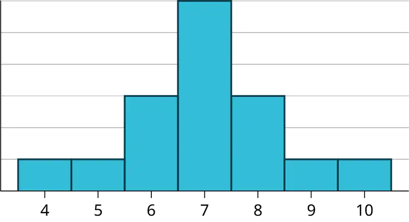
The histogram (shown in Figure 2.16) displays a symmetrical distribution of data. A distribution is symmetrical if a vertical line can be drawn at some point in the histogram such that the shape to the left and the right of the vertical line are mirror images of each other. The mean, the median, and the mode are each seven for these data. In a perfectly symmetrical distribution, the mean and the median are the same. This example has one mode (unimodal), and the mode is the same as the mean and median. In a symmetrical distribution that has two modes (bimodal), the two modes would be different from the mean and median.
The histogram for the data:
4
5
6
6
6
7
7
7
7
8 (shown in Figure 2.17)
is not symmetrical. The right-hand side seems "chopped off" compared to the left side. A distribution of this type is called skewed to the left because it is pulled out to the left.
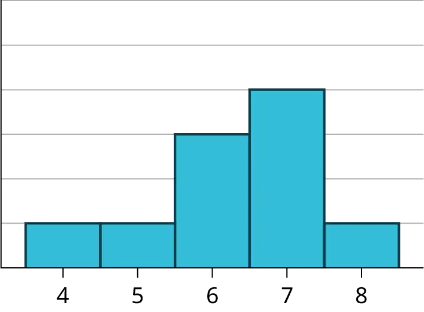
The mean is 6.3, the median is 6.5, and the mode is seven. Notice that the mean is less than the median, and they are both less than the mode. The mean and the median both reflect the skewing, but the mean reflects it more so.
The histogram for the data:
6
7
7
7
7
8
8
8
9
10 Figure 2.18
, is also not symmetrical. It is skewed to the right.
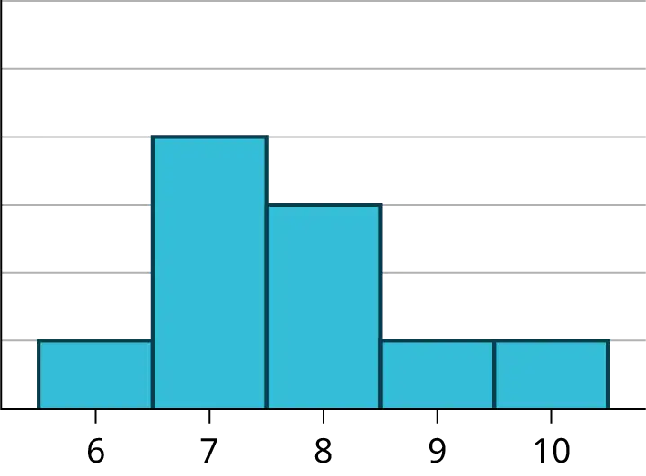
The mean is 7.7, the median is 7.5, and the mode is seven. Of the three statistics, the mean is the largest, while the mode is the smallest. Again, the mean reflects the skewing the most.
The mean is affected by outliers that do not influence the median. Therefore, when the distribution of data is skewed to the left, the mean is often less than the median. When the distribution is skewed to the right, the mean is often greater than the median. In symmetric distributions, we expect the mean and median to be approximately equal in value. This is an important connection between the shape of the distribution and the relationship of the mean and median. It is not, however, true for every data set. The most common exceptions occur in sets of discrete data.
Skewness and symmetry become important when we discuss probability distributions in later chapters.
Example 2.31
Statistics are used to compare and sometimes identify authors. The following lists shows a simple random sample that compares the letter counts for three authors.
Terry: 7; 9; 3; 3; 3; 4; 1; 3; 2; 2
Davis: 3; 3; 3; 4; 1; 4; 3; 2; 3; 1
Maris: 2; 3; 4; 4; 4; 6; 6; 6; 8; 3
- Make a dot plot for the three authors and compare the shapes.
- Calculate the mean for each.
- Calculate the median for each.
- Describe any pattern you notice between the shape and the measures of center.
Solution
a.
b. Terry’s mean is 3.7, Davis’ mean is 2.7, Maris’ mean is 4.6.
c. Terry’s median is three, Davis’ median is three. Maris’ median is four.
d. It appears that the median is always closest to the high point (the mode), while the mean tends to be farther out on the tail. In a symmetrical distribution, the mean and the median are both centrally located close to the high point of the distribution.
Try It
Discuss the mean, median, and mode for each of the following problems. Is there a pattern between the shape and measure of the center?
a.
b.
Table 2.29
| The Ages Former U.S Presidents Died | |
|---|---|
| 4 | 6 9 |
| 5 | 3 6 7 7 7 8 |
| 6 | 0 0 3 3 4 4 5 6 7 7 7 8 |
| 7 | 0 1 1 2 3 4 7 8 8 9 |
| 8 | 0 1 3 5 8 |
| 9 | 0 0 3 3 |
| Key: 8|0 means 80. | |
c.
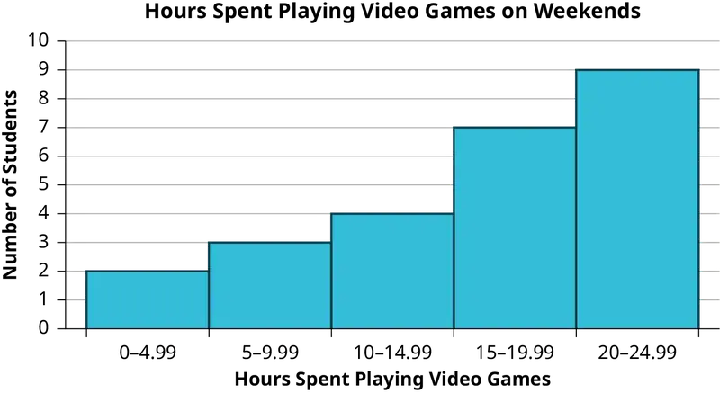
2.7 Measures of the Spread of the Data¶
An important characteristic of any set of data is the variation in the data. In some data sets, the data values are concentrated closely near the mean; in other data sets, the data values are more widely spread out from the mean. The most common measure of variation, or spread, is the standard deviation. The standard deviation is a number that measures how far data values are from their mean.
The standard deviation¶
- provides a numerical measure of the overall amount of variation in a data set, and
- can be used to determine whether a particular data value is close to or far from the mean.
The standard deviation provides a measure of the overall variation in a data set¶
The standard deviation is always positive or zero. The standard deviation is small when the data are all concentrated close to the mean, exhibiting little variation or spread. The standard deviation is larger when the data values are more spread out from the mean, exhibiting more variation.
Suppose that we are studying the amount of time customers wait in line at the checkout at supermarket A and supermarket B. The average wait time at both supermarkets is five minutes. At supermarket A, the standard deviation for the wait time is two minutes; at supermarket B the standard deviation for the wait time is four minutes.
Because supermarket B has a higher standard deviation, we know that there is more variation in the wait times at supermarket B. Overall, wait times at supermarket B are more spread out from the average; wait times at supermarket A are more concentrated near the average.
The standard deviation can be used to determine whether a data value is close to or far from the mean.¶
Suppose that Rosa and Binh both shop at supermarket A. Rosa waits at the checkout counter for seven minutes and Binh waits for one minute. At supermarket A, the mean waiting time is five minutes and the standard deviation is two minutes. The standard deviation can be used to determine whether a data value is close to or far from the mean.
Rosa waits for seven minutes:
- Seven is two minutes longer than the average of five; two minutes is equal to one standard deviation.
- Rosa's wait time of seven minutes is two minutes longer than the average of five minutes.
- Rosa's wait time of seven minutes is one standard deviation above the average of five minutes.
Binh waits for one minute.
- One is four minutes less than the average of five; four minutes is equal to two standard deviations.
- Binh's wait time of one minute is four minutes less than the average of five minutes.
- Binh's wait time of one minute is two standard deviations below the average of five minutes.
- A data value that is two standard deviations from the average is just on the borderline for what many statisticians would consider to be far from the average. Considering data to be far from the mean if it is more than two standard deviations away is more of an approximate "rule of thumb" than a rigid rule. In general, the shape of the distribution of the data affects how much of the data is further away than two standard deviations. (You will learn more about this in later chapters.)
The number line may help you understand standard deviation. If we were to put five and seven on a number line, seven is to the right of five. We say, then, that seven is one standard deviation to the right of five because 5 + (1)(2) = 7.
If one were also part of the data set, then one is two standard deviations to the left of five because 5 + (–2)(2) = 1.
- In general, a value = mean + (#ofSTDEV)(standard deviation)
- where #ofSTDEVs = the number of standard deviations
-
ofSTDEV does not need to be an integer¶
- One is two standard deviations less than the mean of five because: 1 = 5 + (–2)(2).
The equation value = mean + (#ofSTDEVs)(standard deviation) can be expressed for a sample and for a population.
- sample:\(x\ \text{=}\ \bar{x}\ \text{+}\ (\#ofSTDEV)(s)\)
- Population:\(x=\mu+(\#ofSTDEV)(\sigma)\)
The lower case letter s represents the sample standard deviation and the Greek letter σ (sigma, lower case) represents the population standard deviation.
The symbol \(\bar{x}\) is the sample mean and the Greek symbol \(\mu\) is the population mean.
Calculating the Standard Deviation¶
If x is a number, then the difference "x – mean" is called its deviation. In a data set, there are as many deviations as there are items in the data set. The deviations are used to calculate the standard deviation. If the numbers belong to a population, in symbols a deviation is x – μ. For sample data, in symbols a deviation is x – \(\bar{x}\).
The procedure to calculate the standard deviation depends on whether the numbers are the entire population or are data from a sample. The calculations are similar, but not identical. Therefore the symbol used to represent the standard deviation depends on whether it is calculated from a population or a sample. The lower case letter s represents the sample standard deviation and the Greek letter σ (sigma, lower case) represents the population standard deviation. If the sample has the same characteristics as the population, then s should be a good estimate of σ.
To calculate the standard deviation, we need to calculate the variance first. The variance is the average of the squares of the deviations (the x – \(\bar{x}\) values for a sample, or the x – μ values for a population). The symbol σ2 represents the population variance; the population standard deviation σ is the square root of the population variance. The symbol s2 represents the sample variance; the sample standard deviation s is the square root of the sample variance. You can think of the standard deviation as a special average of the deviations.
If the numbers come from a census of the entire population and not a sample, when we calculate the average of the squared deviations to find the variance, we divide by N, the number of items in the population. If the data are from a sample rather than a population, when we calculate the average of the squared deviations, we divide by n – 1, one less than the number of items in the sample.
Formulas for the Sample Standard Deviation¶
- \(s=\sqrt{\frac{\Sigma{(x-\bar{x})}^{2}}{n-1}}\) or \(s=\sqrt{\frac{\Sigma f{(x-\bar{x})}^{2}}{n-1}}\)
- For the sample standard deviation, the denominator is n - 1, that is the sample size MINUS 1.
Formulas for the Population Standard Deviation¶
- \(\sigma=\sqrt{\frac{\Sigma{(x-\mu)}^{2}}{N}}\) or \(\sigma=\sqrt{\frac{\Sigma f{(x-\mu)}^{2}}{N}}\)
- For the population standard deviation, the denominator is N, the number of items in the population.
In these formulas, f represents the frequency with which a value appears. For example, if a value appears once, f is one. If a value appears three times in the data set or population, f is three.
Sampling Variability of a Statistic¶
The statistic of a sampling distribution was discussed in Descriptive Statistics: Measures of the Center of the Data. How much the statistic varies from one sample to another is known as the sampling variability of a statistic. You typically measure the sampling variability of a statistic by its standard error. The standard error of the mean is an example of a standard error. It is a special standard deviation and is known as the standard deviation of the sampling distribution of the mean. You will cover the standard error of the mean in the chapter The Central Limit Theorem (not now). The notation for the standard error of the mean is \(\frac{\sigma}{\sqrt{n}}\) where σ is the standard deviation of the population and n is the size of the sample.
NOTE
In practice, USE A CALCULATOR OR COMPUTER SOFTWARE TO CALCULATE THE STANDARD DEVIATION. If you are using a TI-83, 83+, 84+ calculator, you need to select the appropriate standard deviation σx or sx from the summary statistics. We will concentrate on using and interpreting the information that the standard deviation gives us. However you should study the following step-by-step example to help you understand how the standard deviation measures variation from the mean. (The calculator instructions appear at the end of this example.)
Example 2.32
In a fifth grade class, the teacher was interested in the average age and the sample standard deviation of the ages of the students. The following data are the ages for a SAMPLE of n = 20 fifth grade students. The ages are rounded to the nearest half year:
9; 9.5; 9.5; 10; 10; 10; 10; 10.5; 10.5; 10.5; 10.5; 11; 11; 11; 11; 11; 11; 11.5; 11.5; 11.5;
The average age is 10.53 years, rounded to two places.
The variance may be calculated by using a table. Then the standard deviation is calculated by taking the square root of the variance. We will explain the parts of the table after calculating s.
Table 2.30
| Data | Freq. | Deviations | Deviations2 | (Freq.)(Deviations2) |
|---|---|---|---|---|
| x | f | (x – \(\bar{x}\)) | (x – \(\bar{x}\))2 | (f)(x – \(\bar{x}\))2 |
| 9 | 1 | 9 – 10.525 = –1.525 | (–1.525)2 = 2.325625 | 1 × 2.325625 = 2.325625 |
| 9.5 | 2 | 9.5 – 10.525 = –1.025 | (–1.025)2 = 1.050625 | 2 × 1.050625 = 2.101250 |
| 10 | 4 | 10 – 10.525 = –0.525 | (–0.525)2 = 0.275625 | 4 × 0.275625 = 1.1025 |
| 10.5 | 4 | 10.5 – 10.525 = –0.025 | (–0.025)2 = 0.000625 | 4 × 0.000625 = 0.0025 |
| 11 | 6 | 11 – 10.525 = 0.475 | (0.475)2 = 0.225625 | 6 × 0.225625 = 1.35375 |
| 11.5 | 3 | 11.5 – 10.525 = 0.975 | (0.975)2 = 0.950625 | 3 × 0.950625 = 2.851875 |
| The total is 9.7375 |
The sample variance, s2, is equal to the sum of the last column (9.7375) divided by the total number of data values minus one (20 – 1):
\(s^{2}=\frac{9.7375}{20-1}=0.5125\)
The sample standard deviation s is equal to the square root of the sample variance:
\(s=\sqrt{0.5125}=0.715891,\) which is rounded to two decimal places, s = 0.72.
Typically, you do the calculation for the standard deviation on your calculator or computer. The intermediate results are not rounded. This is done for accuracy.
- For the following problems, recall that value = mean + (#ofSTDEVs)(standard deviation). Verify the mean and standard deviation or a calculator or computer.
- For a sample: x = \(\bar{x}\) + (#ofSTDEVs)(s)
- For a population: x = μ + (#ofSTDEVs)(σ)
- For this example, use x = \(\bar{x}\) + (#ofSTDEVs)(s) because the data is from a sample
- Verify the mean and standard deviation on your calculator or computer.
- Find the value that is one standard deviation above the mean. Find (\(\bar{x}\) + 1s).
- Find the value that is two standard deviations below the mean. Find (\(\bar{x}\) – 2s).
- Find the values that are 1.5 standard deviations from (below and above) the mean.
Solution
a.
Using the Calculator
- Clear lists L1 and L2. Press
STAT 4:ClrList. Enter 2nd 1 for L1, the comma (,), and 2nd 2 for L2. - Enter data into the list editor. Press
STAT 1:EDIT. If necessary, clear the lists by arrowing up into the name. Press CLEAR and arrow down. - Put the data values (9, 9.5, 10, 10.5, 11, 11.5) into list L1 and the frequencies (1, 2, 4, 4, 6, 3) into list L2. Use the arrow keys to move around.
- Press STAT and arrow to CALC. Press
1:1-VarStatsand enter L1 (2nd 1), L2 (2nd 2). Do not forget the comma. Press ENTER. - \(\bar{x}\) = 10.525
- Use Sx because this is sample data (not a population): Sx=0.715891
b. (\(\bar{x}\) + 1s) = 10.53 + (1)(0.72) = 11.25
c. (\(\bar{x}\) – 2s) = 10.53 – (2)(0.72) = 9.09
d. - (\(\bar{x}\) – 1.5s) = 10.53 – (1.5)(0.72) = 9.45 - (\(\bar{x}\) + 1.5s) = 10.53 + (1.5)(0.72) = 11.61
Try It
On a baseball team, the ages of each of the players are as follows:
21; 21; 22; 23; 24; 24; 25; 25; 28; 29; 29; 31; 32; 33; 33; 34; 35; 36; 36; 36; 36; 38; 38; 38; 40
Use your calculator or computer to find the mean and standard deviation. Then find the value that is two standard deviations above the mean.
Explanation of the standard deviation calculation shown in the table¶
The deviations show how spread out the data are about the mean. The data value 11.5 is farther from the mean than is the data value 11 which is indicated by the deviations 0.97 and 0.47. A positive deviation occurs when the data value is greater than the mean, whereas a negative deviation occurs when the data value is less than the mean. The deviation is –1.525 for the data value nine. If you add the deviations, the sum is always zero. (For Example 2.32, there are n = 20 deviations.) So you cannot simply add the deviations to get the spread of the data. By squaring the deviations, you make them positive numbers, and the sum will also be positive. The variance, then, is the average squared deviation.
The variance is a squared measure and does not have the same units as the data. Taking the square root solves the problem. The standard deviation measures the spread in the same units as the data.
Notice that instead of dividing by n = 20, the calculation divided by n – 1 = 20 – 1 = 19 because the data is a sample. For the sample variance, we divide by the sample size minus one (n – 1). Why not divide by n? The answer has to do with the population variance. The sample variance is an estimate of the population variance. Based on the theoretical mathematics that lies behind these calculations, dividing by (n – 1) gives a better estimate of the population variance.
NOTE
Your concentration should be on what the standard deviation tells us about the data. The standard deviation is a number which measures how far the data are spread from the mean. Let a calculator or computer do the arithmetic.
The standard deviation, s or σ, is either zero or larger than zero. Describing the data with reference to the spread is called "variability". The variability in data depends upon the method by which the outcomes are obtained; for example, by measuring or by random sampling. When the standard deviation is zero, there is no spread; that is, the all the data values are equal to each other. The standard deviation is small when the data are all concentrated close to the mean, and is larger when the data values show more variation from the mean. When the standard deviation is a lot larger than zero, the data values are very spread out about the mean; outliers can make s or σ very large.
The standard deviation, when first presented, can seem unclear. By graphing your data, you can get a better "feel" for the deviations and the standard deviation. You will find that in symmetrical distributions, the standard deviation can be very helpful but in skewed distributions, the standard deviation may not be much help. The reason is that the two sides of a skewed distribution have different spreads. In a skewed distribution, it is better to look at the first quartile, the median, the third quartile, the smallest value, and the largest value. Because numbers can be confusing, always graph your data. Display your data in a histogram or a box plot.
Example 2.33
Use the following data (first exam scores) from Professor Dean's spring pre-calculus class:
33; 42; 49; 49; 53; 55; 55; 61; 63; 67; 68; 68; 69; 69; 72; 73; 74; 78; 80; 83; 88; 88; 88; 90; 92; 94; 94; 94; 94; 96; 100
a. Create a chart containing the data, frequencies, relative frequencies, and cumulative relative frequencies to three decimal places.
b. Calculate the following to one decimal place using a TI-83+ or TI-84 calculator:
i. The sample mean
ii. The sample standard deviation
iii. The median
iv. The first quartile
v. The third quartile
vi. IQR
c. Construct a box plot and a histogram on the same set of axes. Make comments about the box plot, the histogram, and the chart.
Solution
a. See Table 2.31
b. i. The sample mean = 73.5
ii. The sample standard deviation = 17.9
iii. The median = 73
iv. The first quartile = 61
v. The third quartile = 90
vi. IQR = 90 – 61 = 29
c. The x-axis goes from 32.5 to 100.5; y-axis goes from –2.4 to 15 for the histogram. The number of intervals is five, so the width of an interval is (100.5 – 32.5) divided by five, is equal to 13.6. Endpoints of the intervals are as follows: the starting point is 32.5, 32.5 + 13.6 = 46.1, 46.1 + 13.6 = 59.7, 59.7 + 13.6 = 73.3, 73.3 + 13.6 = 86.9, 86.9 + 13.6 = 100.5 = the ending value; No data values fall on an interval boundary.
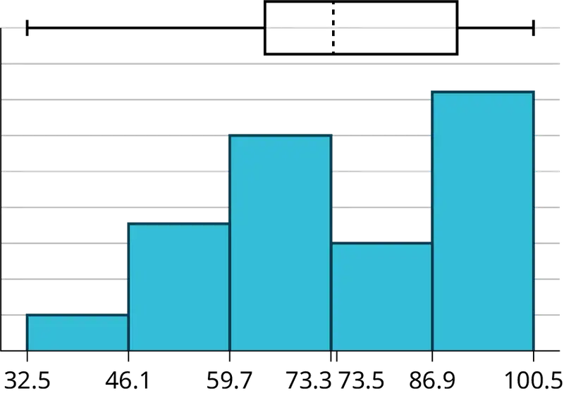
Table 2.31
| Data | Frequency | Relative Frequency | Cumulative Relative Frequency |
|---|---|---|---|
| 33 | 1 | 0.032 | 0.032 |
| 42 | 1 | 0.032 | 0.064 |
| 49 | 2 | 0.065 | 0.129 |
| 53 | 1 | 0.032 | 0.161 |
| 55 | 2 | 0.065 | 0.226 |
| 61 | 1 | 0.032 | 0.258 |
| 63 | 1 | 0.032 | 0.29 |
| 67 | 1 | 0.032 | 0.322 |
| 68 | 2 | 0.065 | 0.387 |
| 69 | 2 | 0.065 | 0.452 |
| 72 | 1 | 0.032 | 0.484 |
| 73 | 1 | 0.032 | 0.516 |
| 74 | 1 | 0.032 | 0.548 |
| 78 | 1 | 0.032 | 0.580 |
| 80 | 1 | 0.032 | 0.612 |
| 83 | 1 | 0.032 | 0.644 |
| 88 | 3 | 0.097 | 0.741 |
| 90 | 1 | 0.032 | 0.773 |
| 92 | 1 | 0.032 | 0.805 |
| 94 | 4 | 0.129 | 0.934 |
| 96 | 1 | 0.032 | 0.966 |
| 100 | 1 | 0.032 | 0.998 (Why isn't this value 1?) |
The long left whisker in the box plot is reflected in the left side of the histogram. The spread of the exam scores in the lower 50% is greater (73 – 33 = 40) than the spread in the upper 50% (100 – 73 = 27). The histogram, box plot, and chart all reflect this. There are a substantial number of A and B grades (80s, 90s, and 100). The histogram clearly shows this. The box plot shows us that the middle 50% of the exam scores (IQR = 29) are Ds, Cs, and Bs. The box plot also shows us that the lower 25% of the exam scores are Ds and Fs.
Try It
The following data show the different types of pet food stores in the area carry.
6; 6; 6; 6; 7; 7; 7; 7; 7; 8; 9; 9; 9; 9; 10; 10; 10; 10; 10; 11; 11; 11; 11; 12; 12; 12; 12; 12; 12;
Calculate the sample mean and the sample standard deviation to one decimal place using a TI-83+ or TI-84 calculator.
Standard deviation of Grouped Frequency Tables¶
Recall that for grouped data we do not know individual data values, so we cannot describe the typical value of the data with precision. In other words, we cannot find the exact mean, median, or mode. We can, however, determine the best estimate of the measures of center by finding the mean of the grouped data with the formula: \(Mean\ of\ Frequency\ Table=\frac{\displaystyle \sum fm}{\displaystyle \sum f}\)
where \(f=\) interval frequencies and m = interval midpoints.
Just as we could not find the exact mean, neither can we find the exact standard deviation. Remember that standard deviation describes numerically the expected deviation a data value has from the mean. In simple English, the standard deviation allows us to compare how “unusual” individual data is compared to the mean.
Example 2.34
Find the standard deviation for the data in Table 2.32.
Table 2.32
| Class | Frequency, \(f\) | Midpoint, \(m\) | \(f\cdot m\) | \(\bar{x}\) | \(m-\bar{x}\) | \({(m-\bar{x})}^{2}\) | \(f{(m-\bar{x})}^{2}\) |
|---|---|---|---|---|---|---|---|
| 0–2 | 1 | 1 | 1 | 7.58 | -6.58 | 43.2964 | 43.2964 |
| 3–5 | 6 | 4 | 24 | 7.58 | -3.58 | 12.8164 | 76.8984 |
| 6–8 | 10 | 7 | 70 | 7.58 | -0.58 | 0.3364 | 3.364 |
| 9–11 | 7 | 10 | 70 | 7.58 | 2.42 | 5.8564 | 40.9948 |
| 12–14 | 0 | 13 | 0 | 7.58 | 5.42 | 29.3764 | 0 |
| 15–17 | 2 | 16 | 32 | 7.58 | 8.42 | 70.8964 | 141.7928 |
| SUM (\(\boldsymbol{\Sigma}\)) | 26 | 197 | 306.3464 |
The values in the second, third, and fourth columns of Table 2.32 are used to calculate the mean of the grouped frequency table, the value in the fifth column.
After calculating \(\bar{x}\), find the difference, \(m-\bar{x}\), for each midpoint, \(m\). Next, square each difference. In the final column, calculate the product of the frequency and the squared difference for each class.
The table makes it easy to use the formula for calculating the standard deviation of a grouped frequency table:
Although the formula is not complicated, these calculations are typically performed using technology.
Try It
Find the standard deviation for the data from the previous example
Table 2.33
| Class | Frequency, f |
|---|---|
| 0–2 | 1 |
| 3–5 | 6 |
| 6–8 | 10 |
| 9–11 | 7 |
| 12–14 | 0 |
| 15–17 | 2 |
First, press the STAT key and select 1:Edit
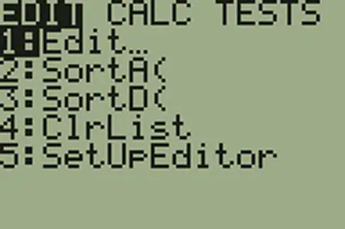
Input the midpoint values into L1 and the frequencies into L2
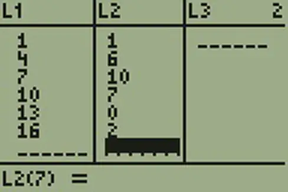
Select STAT, CALC, and 1: 1-Var Stats
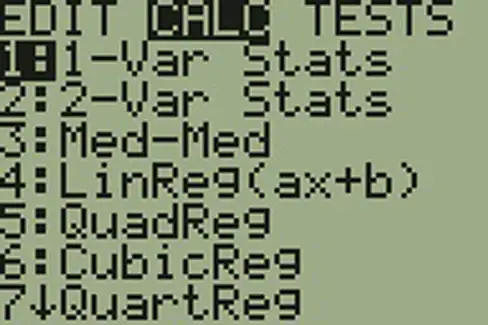
Select 2nd then 1 then , 2nd then 2 Enter
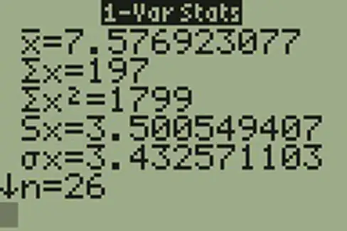
You will see displayed both a population standard deviation, σx, and the sample standard deviation, sx.
Comparing Values from Different Data Sets¶
The standard deviation is useful when comparing data values that come from different data sets. If the data sets have different means and standard deviations, then comparing the data values directly can be misleading.
- For each data value, calculate how many standard deviations away from its mean the value is.
- Use the formula: value = mean + (#ofSTDEVs)(standard deviation); solve for #ofSTDEVs.
- \(\#ofSTDEVs=\frac{\text{value – mean}}{\text{standard deviation}}\)
- Compare the results of this calculation.
ofSTDEVs is often called a "z-score"; we can use the symbol z. In symbols, the formulas become:¶
Table 2.34
| Sample | \(x\) = \(\bar{x}\) + zs | \(z=\frac{x\ -\ \bar{x}}{s}\) |
| Population | \(x\) = \(\mu\) + zσ | \(z=\frac{x\ -\ \mu}{\sigma}\) |
Example 2.35
Two students, John and Ali, from different high schools, wanted to find out who had the highest GPA when compared to his school. Which student had the highest GPA when compared to his school?
Table 2.35
| Student | GPA | School Mean GPA | School Standard Deviation |
|---|---|---|---|
| John | 2.85 | 3.0 | 0.7 |
| Ali | 77 | 80 | 10 |
Solution
For each student, determine how many standard deviations (#ofSTDEVs) his GPA is away from the average, for his school. Pay careful attention to signs when comparing and interpreting the answer.
\(z=\# of STDEVs=\frac{\text{value}\ -\text{mean}}{\text{standard deviation}}=\frac{x-\mu}{\sigma}\)
For John, \(z=\#ofSTDEVs=\frac{2.85-3.0}{0.7}=-0.21\)
For Ali, \(z=\#ofSTDEVs=\frac{77-80}{10}=-0.3\)
John has the better GPA when compared to his school because his GPA is 0.21 standard deviations below his school's mean while Ali's GPA is 0.3 standard deviations below his school's mean.
John's z-score of –0.21 is higher than Ali's z-score of –0.3. For GPA, higher values are better, so we conclude that John has the better GPA when compared to his school.
Try It
Two swimmers, Angie and Beth, from different teams, wanted to find out who had the fastest time for the 50 meter freestyle when compared to her team. Which swimmer had the fastest time when compared to her team?
Table 2.36
| Swimmer | Time (seconds) | Team Mean Time | Team Standard Deviation |
|---|---|---|---|
| Angie | 26.2 | 27.2 | 0.8 |
| Beth | 27.3 | 30.1 | 1.4 |
The following lists give a few facts that provide a little more insight into what the standard deviation tells us about the distribution of the data.
For ANY data set, no matter what the distribution of the data is:
- At least 75% of the data is within two standard deviations of the mean.
- At least 89% of the data is within three standard deviations of the mean.
- At least 95% of the data is within 4.5 standard deviations of the mean.
- This is known as Chebyshev's Rule.
For data having a distribution that is BELL-SHAPED and SYMMETRIC:
- Approximately 68% of the data is within one standard deviation of the mean.
- Approximately 95% of the data is within two standard deviations of the mean.
- More than 99% of the data is within three standard deviations of the mean.
- This is known as the Empirical Rule.
- It is important to note that this rule only applies when the shape of the distribution of the data is bell-shaped and symmetric. We will learn more about this when studying the "Normal" or "Gaussian" probability distribution in later chapters.
2.8 Descriptive Statistics¶
Lab: Descriptive Statistics
Class Time:
Names:
Student Learning Outcomes
- The student will construct a histogram and a box plot.
- The student will calculate univariate statistics.
- The student will examine the graphs to interpret what the data implies.
Collect the Data
Record the number of pairs of shoes you own.
1. Randomly survey 30 classmates about the number of pairs of shoes they own. Record their values.
Table 2.37 Survey Results
2. Construct a histogram. Make five to six intervals. Sketch the graph using a ruler and pencil and scale the axes.
3. Calculate the following values.
a. \(\bar{x}\) = _____
b. s = _____
4. Are the data discrete or continuous? How do you know?
5. In complete sentences, describe the shape of the histogram.
6. Are there any potential outliers? List the value(s) that could be outliers. Use a formula to check the end values to determine if they are potential outliers.
Analyze the Data
-
Determine the following values.
a. Min = _____
b. M = _____
c. Max = _____
d. Q1 = _____
e. Q3 = _____
f. IQR = _____
-
Construct a box plot of data
-
What does the shape of the box plot imply about the concentration of data? Use complete sentences.
-
Using the box plot, how can you determine if there are potential outliers?
-
How does the standard deviation help you to determine concentration of the data and whether or not there are potential outliers?
-
What does the IQR represent in this problem?
-
Show your work to find the value that is 1.5 standard deviations:
a. above the mean.
b. below the mean.
Chapter Review¶
Key Terms¶
- Box plot
- a graph that gives a quick picture of the middle 50% of the data
- First Quartile
- the value that is the median of the of the lower half of the ordered data set
- Frequency
- the number of times a value of the data occurs
- Frequency Polygon
- looks like a line graph but uses intervals to display ranges of large amounts of data
- Frequency Table
- a data representation in which grouped data is displayed along with the corresponding frequencies
- Histogram
- a graphical representation in x-y form of the distribution of data in a data set; x represents the data and y represents the frequency, or relative frequency. The graph consists of contiguous rectangles.
- Interquartile Range
- or IQR, is the range of the middle 50 percent of the data values; the IQR is found by subtracting the first quartile from the third quartile.
- Interval
- also called a class interval; an interval represents a range of data and is used when displaying large data sets
- Mean
- a number that measures the central tendency of the data; a common name for mean is 'average.' The term 'mean' is a shortened form of 'arithmetic mean.' By definition, the mean for a sample (denoted by \(\bar{x}\)) is \(\bar{x}\ =\ \frac{\text{Sum of all values in the sample}}{\text{Number of values in the sample}}\), and the mean for a population (denoted by μ) is \(\mu=\frac{\text{Sum of all values in the population}}{\text{Number of values in the population}}\).
- Median
- a number that separates ordered data into halves; half the values are the same number or smaller than the median and half the values are the same number or larger than the median. The median may or may not be part of the data.
- Midpoint
- the mean of an interval in a frequency table
- Mode
- the value that appears most frequently in a set of data
- Outlier
- an observation that does not fit the rest of the data
- Paired Data Set
- two data sets that have a one to one relationship so that: both data sets are the same size, and; each data point in one data set is matched with exactly one point from the other set.
- Percentile
- a number that divides ordered data into hundredths; percentiles may or may not be part of the data. The median of the data is the second quartile and the 50th percentile. The first and third quartiles are the 25th and the 75th percentiles, respectively.
- Quartiles
- the numbers that separate the data into quarters; quartiles may or may not be part of the data. The second quartile is the median of the data.
- Relative Frequency
- the ratio of the number of times a value of the data occurs in the set of all outcomes to the number of all outcomes
- Skewed
- used to describe data that is not symmetrical; when the right side of a graph looks “chopped off” compared the left side, we say it is “skewed to the left.” When the left side of the graph looks “chopped off” compared to the right side, we say the data is “skewed to the right.” Alternatively: when the lower values of the data are more spread out, we say the data are skewed to the left. When the greater values are more spread out, the data are skewed to the right.
- Standard Deviation
- a number that is equal to the square root of the variance and measures how far data values are from their mean; notation: s for sample standard deviation and σ for population standard deviation.
- Variance
- mean of the squared deviations from the mean, or the square of the standard deviation; for a set of data, a deviation can be represented as x – \(\bar{x}\) where x is a value of the data and \(\bar{x}\) is the sample mean. The sample variance is equal to the sum of the squares of the deviations divided by the difference of the sample size and one.
Chapter Review¶
2.1 Stem-and-Leaf Graphs (Stemplots), Line Graphs, and Bar Graphs¶
A stem-and-leaf plot is a way to plot data and look at the distribution. In a stem-and-leaf plot, all data values within a class are visible. The advantage in a stem-and-leaf plot is that all values are listed, unlike a histogram, which gives classes of data values. A line graph is often used to represent a set of data values in which a quantity varies with time. These graphs are useful for finding trends. That is, finding a general pattern in data sets including temperature, sales, employment, company profit or cost over a period of time. A bar graph is a chart that uses either horizontal or vertical bars to show comparisons among categories. One axis of the chart shows the specific categories being compared, and the other axis represents a discrete value. Some bar graphs present bars clustered in groups of more than one (grouped bar graphs), and others show the bars divided into subparts to show cumulative effect (stacked bar graphs). Bar graphs are especially useful when categorical data is being used.
2.2 Histograms, Frequency Polygons, and Time Series Graphs¶
A histogram is a graphic version of a frequency distribution. The graph consists of bars of equal width drawn adjacent to each other. The horizontal scale represents classes of quantitative data values and the vertical scale represents frequencies. The heights of the bars correspond to frequency values. Histograms are typically used for large, continuous, quantitative data sets. A frequency polygon can also be used when graphing large data sets with data points that repeat. The data usually goes on y-axis with the frequency being graphed on the x-axis. Time series graphs can be helpful when looking at large amounts of data for one variable over a period of time.
2.3 Measures of the Location of the Data¶
The values that divide a rank-ordered set of data into 100 equal parts are called percentiles. Percentiles are used to compare and interpret data. For example, an observation at the 50th percentile would be greater than 50 percent of the other observations in the set. Quartiles divide data into quarters. The first quartile (Q1) is the 25th percentile,the second quartile (Q2 or median) is 50th percentile, and the third quartile (Q3) is the 75th percentile. The interquartile range, or IQR, is the range of the middle 50 percent of the data values. The IQR is found by subtracting Q1 from Q3, and can help determine outliers by using the following two expressions.
- Q3 + IQR(1.5)
- Q1 – IQR(1.5)
2.4 Box Plots¶
Box plots are a type of graph that can help visually organize data. To graph a box plot the following data points must be calculated: the minimum value, the first quartile, the median, the third quartile, and the maximum value. Once the box plot is graphed, you can display and compare distributions of data.
2.5 Measures of the Center of the Data¶
The mean and the median can be calculated to help you find the "center" of a data set. The mean is the best estimate for the actual data set, but the median is the best measurement when a data set contains several outliers or extreme values. The mode will tell you the most frequently occurring datum (or data) in your data set. The mean, median, and mode are extremely helpful when you need to analyze your data, but if your data set consists of ranges which lack specific values, the mean may seem impossible to calculate. However, the mean can be approximated if you add the lower boundary with the upper boundary and divide by two to find the midpoint of each interval. Multiply each midpoint by the number of values found in the corresponding range. Divide the sum of these values by the total number of data values in the set.
2.6 Skewness and the Mean, Median, and Mode¶
Looking at the distribution of data can reveal a lot about the relationship between the mean, the median, and the mode. There are three types of distributions. A left (or negative) skewed distribution has a shape like Figure 2.17. A right (or positive) skewed distribution has a shape like Figure 2.18. A symmetrical distribution looks like Figure 2.16.
2.7 Measures of the Spread of the Data¶
The standard deviation can help you calculate the spread of data. There are different equations to use if are calculating the standard deviation of a sample or of a population.
- The Standard Deviation allows us to compare individual data or classes to the data set mean numerically.
- s = \(\sqrt{\frac{{\displaystyle \sum}^{}{(x-\bar{x})}^{2}}{n-1}}\) or s = \(\sqrt{\frac{{\displaystyle \sum}^{}f{(x-\bar{x})}^{2}}{n-1}}\) is the formula for calculating the standard deviation of a sample. To calculate the standard deviation of a population, we would use the population mean, μ, and the formula σ = \(\sqrt{\frac{{\displaystyle \sum}^{}{(x-\mu)}^{2}}{N}}\) or σ = \(\sqrt{\frac{{\displaystyle \sum}^{}f{(x-\mu)}^{2}}{N}}\).
Formula Review¶
2.3 Measures of the Location of the Data¶
\(i=\left( \frac{k}{100} \right)(n+1)\)
where i = the ranking or position of a data value,
k = the kth percentile,
n = total number of data.
Expression for finding the percentile of a data value: \(\left( \frac{x\ \text{+}\ 0.5y}{n} \right)\)(100)
where x = the number of values counting from the bottom of the data list up to but not including the data value for which you want to find the percentile,
y = the number of data values equal to the data value for which you want to find the percentile,
n = total number of data
2.5 Measures of the Center of the Data¶
\(\mu=\frac{\displaystyle \sum fm}{\displaystyle \sum f}\) Where f = interval frequencies and m = interval midpoints.
2.7 Measures of the Spread of the Data¶
\(s_{x}=\sqrt{\frac{\displaystyle \sum fm^{2}}{n}-{\bar{x}}^{2}}\) where \(\begin{array}{l} s_{x}=\ \text{sample standard deviation} \\ \bar{x}\ \text{= sample mean} \end{array}\)
References¶
References
2.1 Stem-and-Leaf Graphs (Stemplots), Line Graphs, and Bar Graphs
Doyle, Brandon. "TikTok Statistics – Updated Mar 2023." Wallaroo. March 21, 2023. https://wallaroomedia.com/blog/social-media/tiktok-statistics/.
“Table 219.20. Public High School Graduates, by Region, State, and Jurisdiction: Selected Years, 1980-81 through 2030-31.” National Center for Education Statistics. Accessed May 24, 2023. https://nces.ed.gov/programs/digest/d21/tables/dt21_219.20.asp.
“Overweight and Obesity: Adult Obesity Facts.” Centers for Disease Control and Prevention. Available online at http://www.cdc.gov/obesity/data/adult.html (accessed September 13, 2013).
2.2 Histograms, Frequency Polygons, and Time Series Graphs
Data on annual homicides in Detroit, 1961–73, from Gunst & Mason’s book ‘Regression Analysis and its Application’, Marcel Dekker
“Timeline: Guide to the U.S. Presidents: Information on every president’s birthplace, political party, term of office, and more.” Scholastic, 2013. Available online at http://www.scholastic.com/teachers/article/timeline-guide-us-presidents (accessed April 3, 2013).
“Presidents.” Fact Monster. Pearson Education, 2007. Available online at http://www.factmonster.com/ipka/A0194030.html (accessed April 3, 2013).
“Food Security Statistics.” Food and Agriculture Organization of the United Nations. Available online at http://www.fao.org/economic/ess/ess-fs/en/ (accessed April 3, 2013).
“Consumer Price Index.” United States Department of Labor: Bureau of Labor Statistics. Available online at http://data.bls.gov/pdq/SurveyOutputServlet (accessed April 3, 2013).
“CO2 emissions (kt).” The World Bank, 2013. Available online at http://databank.worldbank.org/data/home.aspx (accessed April 3, 2013).
“Births Time Series Data.” General Register Office For Scotland, 2013. Available online at http://www.gro-scotland.gov.uk/statistics/theme/vital-events/births/time-series.html (accessed April 3, 2013).
“Demographics: Children under the age of 5 years underweight.” Indexmundi. Available online at http://www.indexmundi.com/g/r.aspx?t=50&v=2224&aml=en (accessed April 3, 2013).
Gunst, Richard, Robert Mason. Regression Analysis and Its Application: A Data-Oriented Approach. CRC Press: 1980.
“Overweight and Obesity: Adult Obesity Facts.” Centers for Disease Control and Prevention. Available online at http://www.cdc.gov/obesity/data/adult.html (accessed September 13, 2013).
2.3 Measures of the Location of the Data
Cauchon, Dennis, Paul Overberg. “Census data shows minorities now a majority of U.S. births.” USA Today, 2012. Available online at http://usatoday30.usatoday.com/news/nation/story/2012-05-17/minority-birthscensus/55029100/1 (accessed April 3, 2013).
Data from the United States Department of Commerce: United States Census Bureau. Available online at http://www.census.gov/ (accessed April 3, 2013).
“1990 Census.” United States Department of Commerce: United States Census Bureau. Available online at http://www.census.gov/main/www/cen1990.html (accessed April 3, 2013).
Data from San Jose Mercury News.
Data from Time Magazine; survey by Yankelovich Partners, Inc.
2.4 Box Plots
Data from West Magazine.
2.5 Measures of the Center of the Data
Data from The World Bank, available online at http://www.worldbank.org (accessed April 3, 2013).
“Demographics: Obesity – adult prevalence rate.” Indexmundi. Available online at http://www.indexmundi.com/g/r.aspx?t=50&v=2228&l=en (accessed April 3, 2013).
2.7 Measures of the Spread of the Data
Data from Microsoft Bookshelf.
King, Bill.“Graphically Speaking.” Institutional Research, Lake Tahoe Community College. Available online at http://www.ltcc.edu/web/about/institutional-research (accessed April 3, 2013).
Practice¶
2.1 Stem-and-Leaf Graphs (Stemplots), Line Graphs, and Bar Graphs¶
For each of the following data sets, create a stem plot and identify any outliers.
1. The miles per gallon rating for 30 cars are shown below (lowest to highest).
19, 19, 19, 20, 21, 21, 25, 25, 25, 26, 26, 28, 29, 31, 31, 32, 32, 33, 34, 35, 36, 37, 37, 38, 38, 38, 38, 41, 43, 43
Answer
Table 2.38
| Stem | Leaf |
|---|---|
| 1 | 9 9 9 |
| 2 | 0 1 1 5 5 5 6 6 8 9 |
| 3 | 1 1 2 2 3 4 5 6 7 7 8 8 8 8 |
| 4 | 1 3 3 |
2. The height in feet of 25 trees is shown below (lowest to highest).
25, 27, 33, 34, 34, 34, 35, 37, 37, 38, 39, 39, 39, 40, 41, 45, 46, 47, 49, 50, 50, 53, 53, 54, 54
3. The data are the prices of different laptops at an electronics store. Round each value to the nearest ten.
249, 249, 260, 265, 265, 280, 299, 299, 309, 319, 325, 326, 350, 350, 350, 365, 369, 389, 409, 459, 489, 559, 569, 570, 610
Answer
Table 2.39
| Stem | Leaf |
|---|---|
| 2 | 5 5 6 7 7 8 |
| 3 | 0 0 1 2 3 3 5 5 5 7 7 9 |
| 4 | 1 6 9 |
| 5 | 6 7 7 |
| 6 | 1 |
4. The data are daily high temperatures in a town for one month.
61, 61, 62, 64, 66, 67, 67, 67, 68, 69, 70, 70, 70, 71, 71, 72, 74, 74, 74, 75, 75, 75, 76, 76, 77, 78, 78, 79, 79, 95
For the next three exercises, use the data to construct a line graph.
5. In a survey, 40 people were asked how many times they visited a store before making a major purchase. The results are shown in Table 2.40.
Table 2.40
| Number of times in store | Frequency |
|---|---|
| 1 | 4 |
| 2 | 10 |
| 3 | 16 |
| 4 | 6 |
| 5 | 4 |
Answer
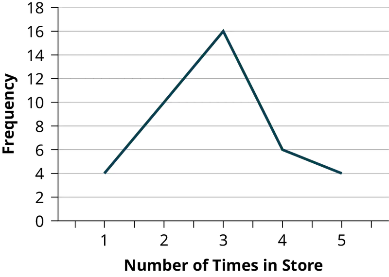
6. In a survey, several people were asked how many years it has been since they purchased a mattress. The results are shown in Table 2.41.
Table 2.41
| Years since last purchase | Frequency |
|---|---|
| 0 | 2 |
| 1 | 8 |
| 2 | 13 |
| 3 | 22 |
| 4 | 16 |
| 5 | 9 |
7. Several children were asked how many TV shows they watch each day. The results of the survey are shown in Table 2.42.
Table 2.42
| Number of TV Shows | Frequency |
|---|---|
| 0 | 12 |
| 1 | 18 |
| 2 | 36 |
| 3 | 7 |
| 4 | 2 |
Answer
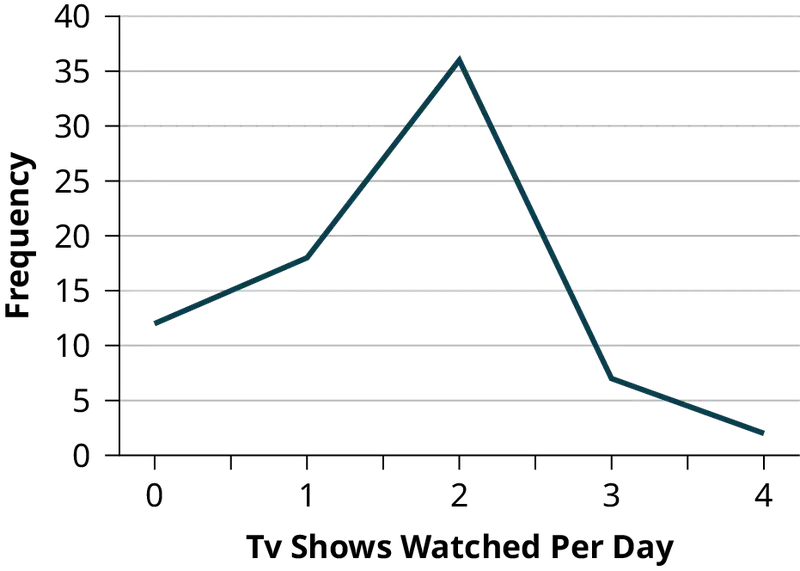
8. The students in Ms. Ramirez’s math class have birthdays in each of the four seasons. Table 2.43 shows the four seasons, the number of students who have birthdays in each season, and the percentage (%) of students in each group. Construct a bar graph showing the number of students.
Table 2.43
| Seasons | Number of students | Proportion of population |
|---|---|---|
| Spring | 8 | 24% |
| Summer | 9 | 26% |
| Autumn | 11 | 32% |
| Winter | 6 | 18% |
9. Using the data from Ms. Ramirez’s math class supplied in Table 2.43, construct a bar graph showing the percentages.
Answer
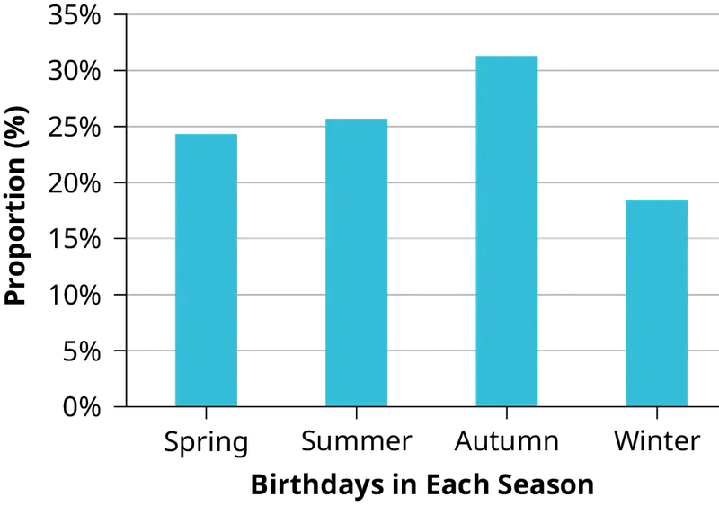
10. David County has six high schools. Each school sent students to participate in a county-wide science competition. Table 2.44 shows the percentage breakdown of competitors from each school, and the percentage of the entire student population of the county that goes to each school. Construct a bar graph that shows the population percentage of competitors from each school.
Table 2.44
| High School | Science competition population | Overall student population |
|---|---|---|
| Alabaster | 28.9% | 8.6% |
| Concordia | 7.6% | 23.2% |
| Genoa | 12.1% | 15.0% |
| Mocksville | 18.5% | 14.3% |
| Tynneson | 24.2% | 10.1% |
| West End | 8.7% | 28.8% |
11. Use the data from the David County science competition supplied in Table 2.44. Construct a bar graph that shows the county-wide population percentage of students at each school.
Answer
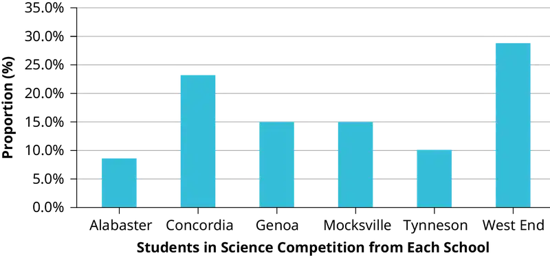
2.2 Histograms, Frequency Polygons, and Time Series Graphs¶
12. Sixty-five randomly selected car salespersons were asked the number of cars they generally sell in one week. Fourteen people answered that they generally sell three cars; nineteen generally sell four cars; twelve generally sell five cars; nine generally sell six cars; eleven generally sell seven cars. Complete the table.
Table 2.45
| Data Value (# cars) | Frequency | Relative Frequency | Cumulative Relative Frequency |
|---|---|---|---|
13. What does the frequency column in Table 2.45 sum to? Why?
Answer
65
14. What does the relative frequency column in Table 2.45 sum to? Why?
15. What is the difference between relative frequency and frequency for each data value in Table 2.45?
Answer
The relative frequency shows the proportion of data points that have each value. The frequency tells the number of data points that have each value.
16. What is the difference between cumulative relative frequency and relative frequency for each data value?
17. To construct the histogram for the data in Table 2.45, determine appropriate minimum and maximum x and y values and the scaling. Sketch the histogram. Label the horizontal and vertical axes with words. Include numerical scaling.
Answer
Answers will vary. One possible histogram is shown:
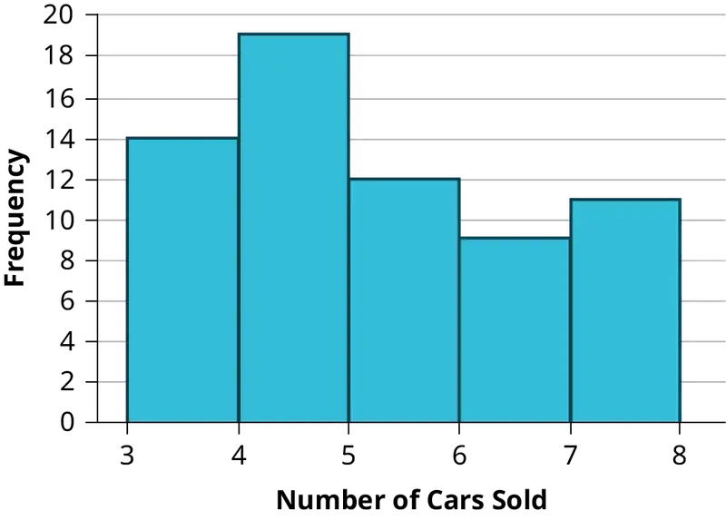
18. Construct a frequency polygon for the following:
a. Table 2.46
| Pulse Rates for Females | Frequency |
|---|---|
| 60–69 | 12 |
| 70–79 | 14 |
| 80–89 | 11 |
| 90–99 | 1 |
| 100–109 | 1 |
| 110–119 | 0 |
| 120–129 | 1 |
b. Table 2.47
| Actual Speed in a 30 MPH Zone | Frequency |
|---|---|
| 42–45 | 25 |
| 46–49 | 14 |
| 50–53 | 7 |
| 54–57 | 3 |
| 58–61 | 1 |
c. Table 2.48
| Tar (mg) in Nonfiltered Cigarettes | Frequency |
|---|---|
| 10–13 | 1 |
| 14–17 | 0 |
| 18–21 | 15 |
| 22–25 | 7 |
| 26–29 | 2 |
19. Construct a frequency polygon from the frequency distribution for the 50 highest ranked countries for depth of hunger.
Table 2.49
| Depth of Hunger | Frequency |
|---|---|
| 230–259 | 21 |
| 260–289 | 13 |
| 290–319 | 5 |
| 320–349 | 7 |
| 350–379 | 1 |
| 380–409 | 1 |
| 410–439 | 1 |
Answer
Find the midpoint for each class. These will be graphed on the x-axis. The frequency values will be graphed on the y-axis values.
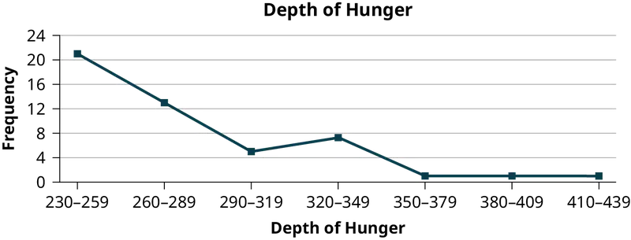
20. Use the two frequency tables to compare the life expectancy of males and females from 20 randomly selected countries. Include an overlayed frequency polygon and discuss the shapes of the distributions, the center, the spread, and any outliers. What can we conclude about the life expectancy of females compared to males?
Table 2.50
| Life Expectancy at Birth – Females | Frequency |
|---|---|
| 49–55 | 3 |
| 56–62 | 3 |
| 63–69 | 1 |
| 70–76 | 3 |
| 77–83 | 8 |
| 84–90 | 2 |
Table 2.51
| Life Expectancy at Birth – Males | Frequency |
|---|---|
| 49–55 | 3 |
| 56–62 | 3 |
| 63–69 | 1 |
| 70–76 | 1 |
| 77–83 | 7 |
| 84–90 | 5 |
21. Construct a times series graph for (a) the number of male births, (b) the number of female births, and (c) the total number of births.
Table 2.52
| Sex/Year | 1855 | 1856 | 1857 | 1858 | 1859 | 1860 | 1861 |
| Female | 45,545 | 49,582 | 50,257 | 50,324 | 51,915 | 51,220 | 52,403 |
| Male | 47,804 | 52,239 | 53,158 | 53,694 | 54,628 | 54,409 | 54,606 |
| Total | 93,349 | 101,821 | 103,415 | 104,018 | 106,543 | 105,629 | 107,009 |
Table 2.53
| Sex/Year | 1862 | 1863 | 1864 | 1865 | 1866 | 1867 | 1868 | 1869 |
| Female | 51,812 | 53,115 | 54,959 | 54,850 | 55,307 | 55,527 | 56,292 | 55,033 |
| Male | 55,257 | 56,226 | 57,374 | 58,220 | 58,360 | 58,517 | 59,222 | 58,321 |
| Total | 107,069 | 109,341 | 112,333 | 113,070 | 113,667 | 114,044 | 115,514 | 113,354 |
Table 2.54
| Sex/Year | 1870 | 1871 | 1872 | 1873 | 1874 | 1875 |
| Female | 56,431 | 56,099 | 57,472 | 58,233 | 60,109 | 60,146 |
| Male | 58,959 | 60,029 | 61,293 | 61,467 | 63,602 | 63,432 |
| Total | 115,390 | 116,128 | 118,765 | 119,700 | 123,711 | 123,578 |
Answer
![This is a line graph that shows births in Scotland and is compiled from the data provided in tables 2.49, 2.50, and 2.51. The horizontal axis shows Years in intervals of 1 from 1855 to 1875. The vertical axis shows number of births in intervals of 5,000 from 40,000 to 130,000. A series of connected line segments show the numbers of female births over the period, increasing form 45,545 in 1855 to 60,146 in 1875. A second series of connected line segments show the numbers of male births over the period, increasing form 47,804 in 1855 to 63,432 in 1875. A third series of connected line segments show the total births over the period, increasing from 93,349 in 1855 to 123,578 in 1875.](img/cnx-stats-c02-m05a-028anno.webp)
22. The following data sets list full time police per 100,000 citizens along with homicides per 100,000 citizens for a city during the period from 1961 to 1973.
Table 2.55
| Year | 1961 | 1962 | 1963 | 1964 | 1965 | 1966 | 1967 |
| Police | 260.35 | 269.8 | 272.04 | 272.96 | 272.51 | 261.34 | 268.89 |
| Homicides | 8.6 | 8.9 | 8.52 | 8.89 | 13.07 | 14.57 | 21.36 |
Table 2.56
| Year | 1968 | 1969 | 1970 | 1971 | 1972 | 1973 |
| Police | 295.99 | 319.87 | 341.43 | 356.59 | 376.69 | 390.19 |
| Homicides | 28.03 | 31.49 | 37.39 | 46.26 | 47.24 | 52.33 |
- Construct a double time series graph using a common x-axis for both sets of data.
- Which variable increased the fastest? Explain.
- Did the city's increase in police officers have an impact on the murder rate? Explain.
2.3 Measures of the Location of the Data¶
23. Listed are 29 ages for Academy Award winning best actors in order from smallest to largest.
18; 21; 22; 25; 26; 27; 29; 30; 31; 33; 36; 37; 41; 42; 47; 52; 55; 57; 58; 62; 64; 67; 69; 71; 72; 73; 74; 76; 77
- Find the 40th percentile.
- Find the 78th percentile.
Answer
- The 40th percentile is 37 years.
- The 78th percentile is 70 years.
24. Listed are 32 ages for Academy Award winning best actors in order from smallest to largest.
18; 18; 21; 22; 25; 26; 27; 29; 30; 31; 31; 33; 36; 37; 37; 41; 42; 47; 52; 55; 57; 58; 62; 64; 67; 69; 71; 72; 73; 74; 76; 77
- Find the percentile of 37.
- Find the percentile of 72.
25. Jesse was ranked 37th in his graduating class of 180 students. At what percentile is Jesse’s ranking?
Answer
Jesse graduated 37th out of a class of 180 students. There are 180 – 37 = 143 students ranked below Jesse. There is one rank of 37.
x = 143 and y = 1. \(\frac{x+0.5y}{n}\)(100) = \(\frac{143+0.5(1)}{180}\)(100) = 79.72. Jesse’s rank of 37 puts him at the 80th percentile.
26.
- For runners in a race, a low time means a faster run. The winners in a race have the shortest running times. Is it more desirable to have a finish time with a high or a low percentile when running a race?
- The 20th percentile of run times in a particular race is 5.2 minutes. Write a sentence interpreting the 20th percentile in the context of the situation.
- A bicyclist in the 90th percentile of a bicycle race completed the race in 1 hour and 12 minutes. Is he among the fastest or slowest cyclists in the race? Write a sentence interpreting the 90th percentile in the context of the situation.
27.
- For runners in a race, a higher speed means a faster run. Is it more desirable to have a speed with a high or a low percentile when running a race?
- The 40th percentile of speeds in a particular race is 7.5 miles per hour. Write a sentence interpreting the 40th percentile in the context of the situation.
Answer
- For runners in a race it is more desirable to have a high percentile for speed. A high percentile means a higher speed which is faster.
- 40% of runners ran at speeds of 7.5 miles per hour or less (slower). 60% of runners ran at speeds of 7.5 miles per hour or more (faster).
28. On an exam, would it be more desirable to earn a grade with a high or low percentile? Explain.
29. Mina is waiting in line at the Department of Motor Vehicles (DMV). Her wait time of 32 minutes is the 85th percentile of wait times. Is that good or bad? Write a sentence interpreting the 85th percentile in the context of this situation.
Answer
When waiting in line at the DMV, the 85th percentile would be a long wait time compared to the other people waiting. 85% of people had shorter wait times than Mina. In this context, Mina would prefer a wait time corresponding to a lower percentile. 85% of people at the DMV waited 32 minutes or less. 15% of people at the DMV waited 32 minutes or longer.
30. In a survey collecting data about the salaries earned by recent college graduates, Li found that her salary was in the 78th percentile. Should Li be pleased or upset by this result? Explain.
31. In a study collecting data about the repair costs of damage to automobiles in a certain type of crash tests, a certain model of car had $1,700 in damage and was in the 90th percentile. Should the manufacturer and the consumer be pleased or upset by this result? Explain and write a sentence that interprets the 90th percentile in the context of this problem.
Answer
The manufacturer and the consumer would be upset. This is a large repair cost for the damages, compared to the other cars in the sample. INTERPRETATION: 90% of the crash tested cars had damage repair costs of $1700 or less; only 10% had damage repair costs of $1700 or more.
32. The University of Wisconsin has two criteria used to set admission standards for students to be admitted to a college in the UW system:
- Students' GPAs and scores on standardized tests (SATs and ACTs) are entered into a formula that calculates an "admissions index" score. The admissions index score is used to set eligibility standards intended to meet the goal of admitting the top 12% of high school students in the state. In this context, what percentile does the top 12% represent?
- Students whose GPAs are at or above the 96th percentile of all students at their high school are eligible (called eligible in the local context), even if they are not in the top 12% of all students in the state. What percentage of students from each high school are "eligible in the local context"?
33. Suppose that you are buying a house. You and your realtor have determined that the most expensive house you can afford is the 34th percentile. The 34th percentile of housing prices is $240,000 in the town you want to move to. In this town, can you afford 34% of the houses or 66% of the houses?
Answer
You can afford 34% of houses. 66% of the houses are too expensive for your budget. INTERPRETATION: 34% of houses cost $240,000 or less. 66% of houses cost $240,000 or more.
Use the following information to answer the next six exercises. Sixty-five randomly selected car salespersons were asked the number of cars they generally sell in one week. Fourteen people answered that they generally sell three cars; nineteen generally sell four cars; twelve generally sell five cars; nine generally sell six cars; eleven generally sell seven cars.
34. First quartile = _______
35. Second quartile = median = 50th percentile = _______
Answer
4
36. Third quartile = _______
37. Interquartile range (IQR) = _____ – _____ = _____
Answer
6 – 4 = 2
38. 10th percentile = _______
39. 70th percentile = _______
Answer
6
2.4 Box Plots¶
Use the following information to answer the next two exercises. Sixty-five randomly selected car salespersons were asked the number of cars they generally sell in one week. Fourteen people answered that they generally sell three cars; nineteen generally sell four cars; twelve generally sell five cars; nine generally sell six cars; eleven generally sell seven cars.
40. Construct a box plot below. Use a ruler to measure and scale accurately.
41. Looking at your box plot, does it appear that the data are concentrated together, spread out evenly, or concentrated in some areas, but not in others? How can you tell?
Answer
More than 25% of salespersons sell four cars in a typical week. You can see this concentration in the box plot because the first quartile is equal to the median. The top 25% and the bottom 25% are spread out evenly; the whiskers have the same length.
2.5 Measures of the Center of the Data¶
42. Find the mean for the following frequency tables.
a. Table 2.57
| Grade | Frequency |
|---|---|
| 49.5–59.5 | 2 |
| 59.5–69.5 | 3 |
| 69.5–79.5 | 8 |
| 79.5–89.5 | 12 |
| 89.5–99.5 | 5 |
b. Table 2.58
| Daily Low Temperature | Frequency |
|---|---|
| 49.5–59.5 | 53 |
| 59.5–69.5 | 32 |
| 69.5–79.5 | 15 |
| 79.5–89.5 | 1 |
| 89.5–99.5 | 0 |
c. Table 2.59
| Points per Game | Frequency |
|---|---|
| 49.5–59.5 | 14 |
| 59.5–69.5 | 32 |
| 69.5–79.5 | 15 |
| 79.5–89.5 | 23 |
| 89.5–99.5 | 2 |
Use the following information to answer the next three exercises: The following data show the lengths of boats moored in a marina. The data are ordered from smallest to largest:
16
17
19
20
20
21
23
24
25
25
25
26
26
27
27
27
28
29
30
32
33
33
34
35
37
39
40
43. Calculate the mean.
Answer
Mean: 16 + 17 + 19 + 20 + 20 + 21 + 23 + 24 + 25 + 25 + 25 + 26 + 26 + 27 + 27 + 27 + 28 + 29 + 30 + 32 + 33 + 33 + 34 + 35 + 37 + 39 + 40 = 738;
\(\frac{738}{27}\) = 27.33
44. Identify the median.
45. Identify the mode.
Answer
The most frequent lengths are 25 and 27, which occur three times. Mode = 25, 27
Use the following information to answer the next three exercises: Sixty-five randomly selected car salespersons were asked the number of cars they generally sell in one week. Fourteen people answered that they generally sell three cars; nineteen generally sell four cars; twelve generally sell five cars; nine generally sell six cars; eleven generally sell seven cars. Calculate the following:
46. sample mean = \(\bar{x}\) = _______
47. median = _______
Answer
4
48. mode = _______
2.6 Skewness and the Mean, Median, and Mode¶
Use the following information to answer the next three exercises: State whether the data are symmetrical, skewed to the left, or skewed to the right.
49. 1
1
1
2
2
2
2
3
3
3
3
3
3
3
3
4
4
4
5
5
Answer
The data are symmetrical. The median is 3 and the mean is 2.85. They are close, and the mode lies close to the middle of the data, so the data are symmetrical.
50. 16
17
19
22
22
22
22
22
23
51. 87
87
87
87
87
88
89
89
90
91
Answer
The data are skewed right. The median is 87.5 and the mean is 88.2. Even though they are close, the mode lies to the left of the middle of the data, and there are many more instances of 87 than any other number, so the data are skewed right.
52. When the data are skewed left, what is the typical relationship between the mean and median?
53. When the data are symmetrical, what is the typical relationship between the mean and median?
Answer
When the data are symmetrical, the mean and median are close or the same.
54. What word describes a distribution that has two modes?
55. Describe the shape of this distribution.
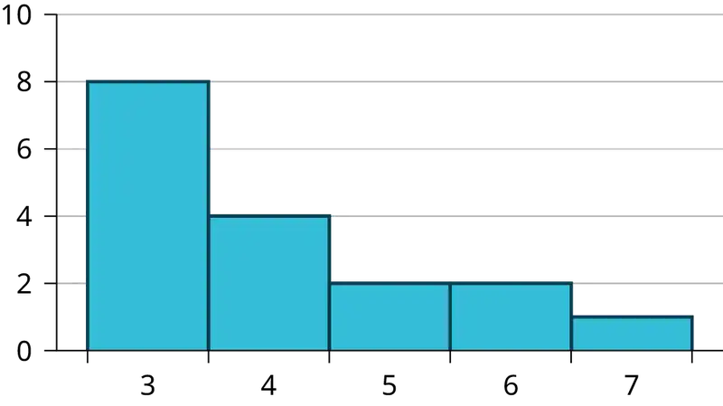
Answer
The distribution is skewed right because it looks pulled out to the right.
56. Describe the relationship between the mode and the median of this distribution.
57. Describe the relationship between the mean and the median of this distribution.
Answer
The mean is 4.1 and is slightly greater than the median, which is four.
58. Describe the shape of this distribution.
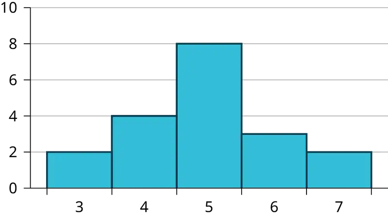
59. Describe the relationship between the mode and the median of this distribution.
Answer
The mode and the median are the same. In this case, they are both five.
60. Are the mean and the median the exact same in this distribution? Why or why not?
61. Describe the shape of this distribution.
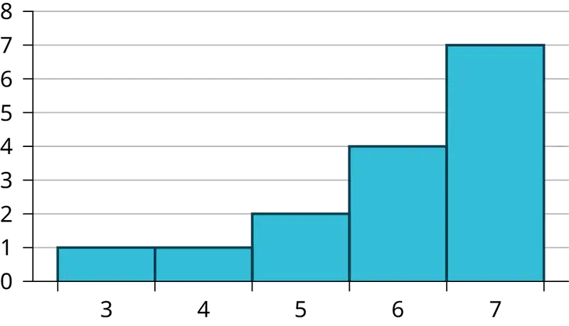
Answer
The distribution is skewed left because it looks pulled out to the left.
62. Describe the relationship between the mode and the median of this distribution.
63. Describe the relationship between the mean and the median of this distribution.
Answer
The mean and the median are both six.
64. The mean and median for the data are the same.
3
4
5
5
6
6
6
6
7
7
7
7
7
7
7
Is the data perfectly symmetrical? Why or why not?
65. Which is the greatest, the mean, the mode, or the median of the data set?
11
11
12
12
12
12
13
15
17
22
22
22
Answer
The mode is 12, the median is 12.5, and the mean is 15.1. The mean is the largest.
66. Which is the least, the mean, the mode, and the median of the data set?
56
56
56
58
59
60
62
64
64
65
67
67. Of the three measures, which tends to reflect skewing the most, the mean, the mode, or the median? Why?
Answer
The mean tends to reflect skewing the most because it is affected the most by outliers.
68. In a perfectly symmetrical distribution, when would the mode be different from the mean and median?
2.7 Measures of the Spread of the Data¶
Use the following information to answer the next two exercises: The following data are the distances between 20 retail stores and a large distribution center. The distances are in miles.
29; 37; 38; 40; 58; 67; 68; 69; 76; 86; 87; 95; 96; 96; 99; 106; 112; 127; 145; 150
69. Use a graphing calculator or computer to find the standard deviation and round to the nearest tenth.
Answer
s = 34.5
70. Find the value that is one standard deviation below the mean.
71. Two baseball players, Fredo and Karl, on different teams wanted to find out who had the higher batting average when compared to his team. Which baseball player had the higher batting average when compared to his team?
Table 2.60
| Baseball Player | Batting Average | Team Batting Average | Team Standard Deviation |
|---|---|---|---|
| Fredo | 0.158 | 0.166 | 0.012 |
| Karl | 0.177 | 0.189 | 0.015 |
Answer
For Fredo: z = \(\frac{0.158-0.166}{0.012}\) = –0.67
For Karl: z = \(\frac{0.177-0.189}{0.015}\) = –0.8
Fredo’s z-score of –0.67 is higher than Karl’s z-score of –0.8. For batting average, higher values are better, so Fredo has a better batting average compared to his team.
72. Use Table 2.60 to find the value that is three standard deviations:
above the mean
below the mean
Find the standard deviation for the following frequency tables using the formula. Check the calculations with the TI 83/84.
73. Find the standard deviation for the following frequency tables using the formula. Check the calculations with the TI 83/84.
a. Table 2.61
| Grade | Frequency |
|---|---|
| 49.5–59.5 | 2 |
| 59.5–69.5 | 3 |
| 69.5–79.5 | 8 |
| 79.5–89.5 | 12 |
| 89.5–99.5 | 5 |
b. Table 2.62
| Daily Low Temperature | Frequency |
|---|---|
| 49.5–59.5 | 53 |
| 59.5–69.5 | 32 |
| 69.5–79.5 | 15 |
| 79.5–89.5 | 1 |
| 89.5–99.5 | 0 |
c. Table 2.63
| Points per Game | Frequency |
|---|---|
| 49.5–59.5 | 14 |
| 59.5–69.5 | 32 |
| 69.5–79.5 | 15 |
| 79.5–89.5 | 23 |
| 89.5–99.5 | 2 |
Answer
- \(s_{x}=\sqrt{\frac{\displaystyle \sum fm^{2}}{n}-{\bar{x}}^{2}}=\sqrt{\frac{193157.45}{30}-{79.5}^{2}}=10.88\)
- \(s_{x}=\sqrt{\frac{\displaystyle \sum fm^{2}}{n}-{\bar{x}}^{2}}=\sqrt{\frac{380945.3}{101}-{60.94}^{2}}=7.62\)
- \(s_{x}=\sqrt{\frac{\displaystyle \sum fm^{2}}{n}-{\bar{x}}^{2}}=\sqrt{\frac{440051.5}{86}-{70.66}^{2}}=11.14\)
Homework¶
2.1 Stem-and-Leaf Graphs (Stemplots), Line Graphs, and Bar Graphs¶
74. Student grades on a chemistry exam were: 77, 78, 76, 81, 86, 51, 79, 82, 84, 99
- Construct a stem-and-leaf plot of the data.
- Are there any potential outliers? If so, which scores are they? Why do you consider them outliers?
75. Table 2.64 contains the percentages of adults who were never married in the 50 U.S. states and Washington, DC.
Table 2.64
| State | Percent (%) | State | Percent (%) | State | Percent (%) |
|---|---|---|---|---|---|
| Alabama | 32.2 | Kentucky | 31.3 | North Dakota | 27.2 |
| Alaska | 24.5 | Louisiana | 31.0 | Ohio | 29.2 |
| Arizona | 24.3 | Maine | 26.8 | Oklahoma | 30.4 |
| Arkansas | 30.1 | Maryland | 27.1 | Oregon | 26.8 |
| California | 24.0 | Massachusetts | 23.0 | Pennsylvania | 28.6 |
| Colorado | 21.0 | Michigan | 30.9 | Rhode Island | 25.5 |
| Connecticut | 22.5 | Minnesota | 24.8 | South Carolina | 31.5 |
| Delaware | 28.0 | Mississippi | 34.0 | South Dakota | 27.3 |
| Washington, DC | 22.2 | Missouri | 30.5 | Tennessee | 30.8 |
| Florida | 26.6 | Montana | 23.0 | Texas | 31.0 |
| Georgia | 29.6 | Nebraska | 26.9 | Utah | 22.5 |
| Hawaii | 22.7 | Nevada | 22.4 | Vermont | 23.2 |
| Idaho | 26.5 | New Hampshire | 25.0 | Virginia | 26.0 |
| Illinois | 28.2 | New Jersey | 23.8 | Washington | 25.5 |
| Indiana | 29.6 | New Mexico | 25.1 | West Virginia | 32.5 |
| Iowa | 28.4 | New York | 23.9 | Wisconsin | 26.3 |
| Kansas | 29.4 | North Carolina | 27.8 | Wyoming | 25.1 |
- Use a random number generator to randomly pick eight states. Construct a bar graph of the rates of those eight states.
- Construct a bar graph for all the states beginning with the letter "A."
- Construct a bar graph for all the states beginning with the letter "M."
Answer
a. Example solution for using the random number generator for the TI-84+ to generate a simple random sample of 8 states. Instructions are as follows.
Number the entries in the table 1–51 (Includes Washington, DC; Numbered vertically)
Press MATH
Arrow over to PRB
Press 5:randInt(
Enter 51,1,8)
Eight numbers are generated (use the right arrow key to scroll through the numbers). The numbers correspond to the numbered states (for this example: {47 21 9 23 51 13 25 4}. If any numbers are repeated, generate a different number by using 5:randInt(51,1)). Here, the states (and Washington DC) are {Arkansas, Washington DC, Idaho, Maryland, Michigan, Mississippi, Virginia, Wyoming}.
Corresponding percents are {30.1, 22.2, 26.5, 27.1, 30.9, 34.0, 26.0, 25.1}.
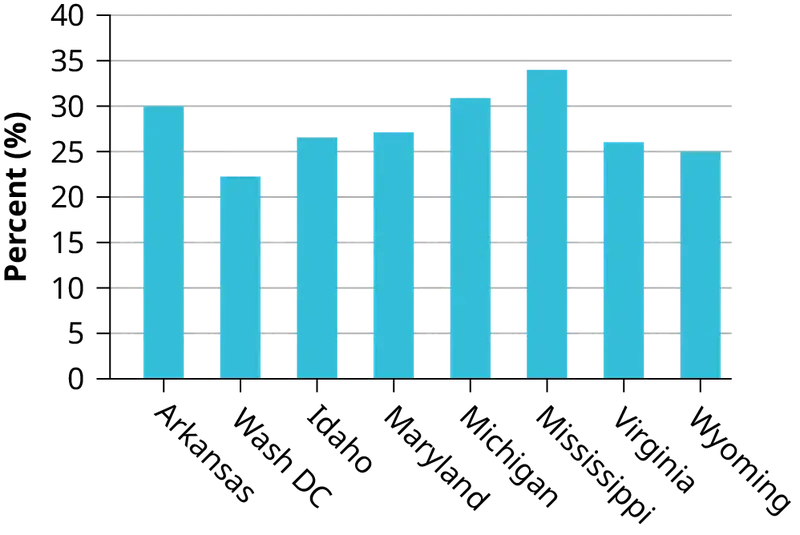
b.
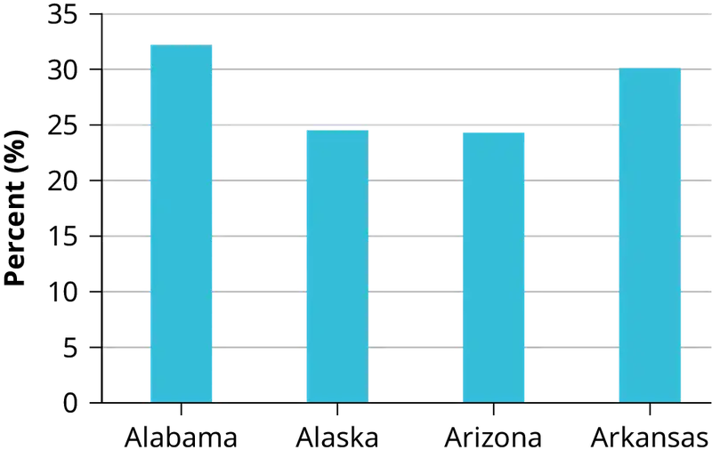
c.
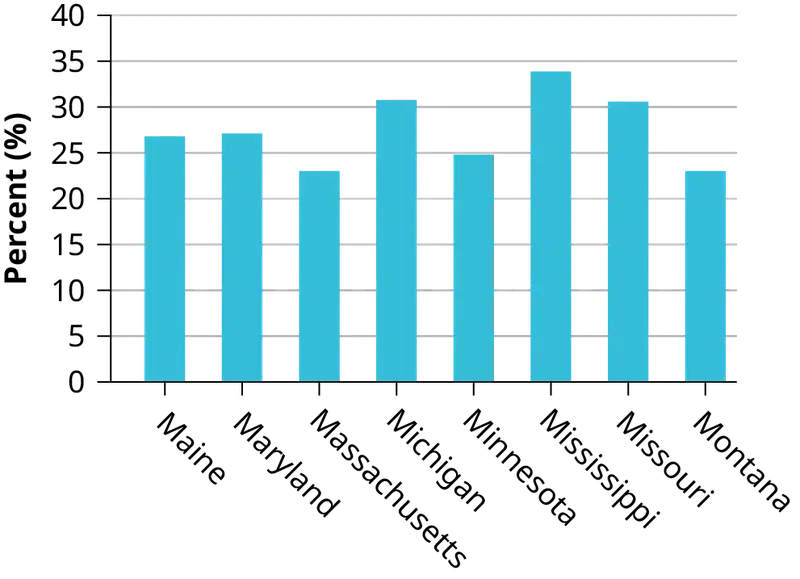
2.2 Histograms, Frequency Polygons, and Time Series Graphs¶
76. Suppose that three book publishers were interested in the number of fiction paperbacks adult consumers purchase per month. Each publisher conducted a survey. In the survey, adult consumers were asked the number of fiction paperbacks they had purchased the previous month. The results are as follows:
Table 2.65 Publisher A
| # of books | Freq. | Rel. Freq. |
|---|---|---|
| 0 | 10 | |
| 1 | 12 | |
| 2 | 16 | |
| 3 | 12 | |
| 4 | 8 | |
| 5 | 6 | |
| 6 | 2 | |
| 8 | 2 |
Table 2.66 Publisher B
| # of books | Freq. | Rel. Freq. |
|---|---|---|
| 0 | 18 | |
| 1 | 24 | |
| 2 | 24 | |
| 3 | 22 | |
| 4 | 15 | |
| 5 | 10 | |
| 7 | 5 | |
| 9 | 1 |
Table 2.67 Publisher C
| # of books | Freq. | Rel. Freq. |
|---|---|---|
| 0–1 | 20 | |
| 2–3 | 35 | |
| 4–5 | 12 | |
| 6–7 | 2 | |
| 8–9 | 1 |
- Find the relative frequencies for each survey. Write them in the charts.
- Using either a graphing calculator, computer, or by hand, use the frequency column to construct a histogram for each publisher's survey. For Publishers A and B, make bar widths of one. For Publisher C, make bar widths of two.
- In complete sentences, give two reasons why the graphs for Publishers A and B are not identical.
- Would you have expected the graph for Publisher C to look like the other two graphs? Why or why not?
- Make new histograms for Publisher A and Publisher B. This time, make bar widths of two.
- Now, compare the graph for Publisher C to the new graphs for Publishers A and B. Are the graphs more similar or more different? Explain your answer.
77. Often, cruise ships conduct all on-board transactions, with the exception of gambling, on a cashless basis. At the end of the cruise, guests pay one bill that covers all onboard transactions. Suppose that 60 single travelers and 70 couples were surveyed as to their on-board bills for a seven-day cruise from Los Angeles to the Mexican Riviera. Following is a summary of the bills for each group.
Table 2.68 Singles
| Amount($) | Frequency | Rel. Frequency |
|---|---|---|
| 51–100 | 5 | |
| 101–150 | 10 | |
| 151–200 | 15 | |
| 201–250 | 15 | |
| 251–300 | 10 | |
| 301–350 | 5 |
Table 2.69 Couples
| Amount($) | Frequency | Rel. Frequency |
|---|---|---|
| 100–150 | 5 | |
| 201–250 | 5 | |
| 251–300 | 5 | |
| 301–350 | 5 | |
| 351–400 | 10 | |
| 401–450 | 10 | |
| 451–500 | 10 | |
| 501–550 | 10 | |
| 551–600 | 5 | |
| 601–650 | 5 |
a. Fill in the relative frequency for each group.
b. Construct a histogram for the singles group. Scale the x-axis by $50 widths. Use relative frequency on the y-axis.
c. Construct a histogram for the couples group. Scale the x-axis by $50 widths. Use relative frequency on the y-axis.
d. Compare the two graphs:
i. List two similarities between the graphs.
ii. List two differences between the graphs.
iii. Overall, are the graphs more similar or different?
e. Construct a new graph for the couples by hand. Since each couple is paying for two individuals, instead of scaling the x-axis by $50, scale it by $100. Use relative frequency on the y-axis.
f. Compare the graph for the singles with the new graph for the couples:
i. List two similarities between the graphs.
ii. Overall, are the graphs more similar or different?
g. How did scaling the couples graph differently change the way you compared it to the singles graph?
h. Based on the graphs, do you think that individuals spend the same amount, more or less, as singles as they do person by person as a couple? Explain why in one or two complete sentences.
Answer
Table 2.70 Singles
| Amount($) | Frequency | Relative Frequency |
|---|---|---|
| 51–100 | 5 | 0.08 |
| 101–150 | 10 | 0.17 |
| 151–200 | 15 | 0.25 |
| 201–250 | 15 | 0.25 |
| 251–300 | 10 | 0.17 |
| 301–350 | 5 | 0.08 |
Table 2.71 Couples
| Amount($) | Frequency | Relative Frequency |
|---|---|---|
| 100–150 | 5 | 0.07 |
| 201–250 | 5 | 0.07 |
| 251–300 | 5 | 0.07 |
| 301–350 | 5 | 0.07 |
| 351–400 | 10 | 0.14 |
| 401–450 | 10 | 0.14 |
| 451–500 | 10 | 0.14 |
| 501–550 | 10 | 0.14 |
| 551–600 | 5 | 0.07 |
| 601–650 | 5 | 0.07 |
a. See Table 2.70 and Table 2.71.
b. In the following histogram data values that fall on the right boundary are counted in the class interval, while values that fall on the left boundary are not counted (with the exception of the first interval where both boundary values are included).
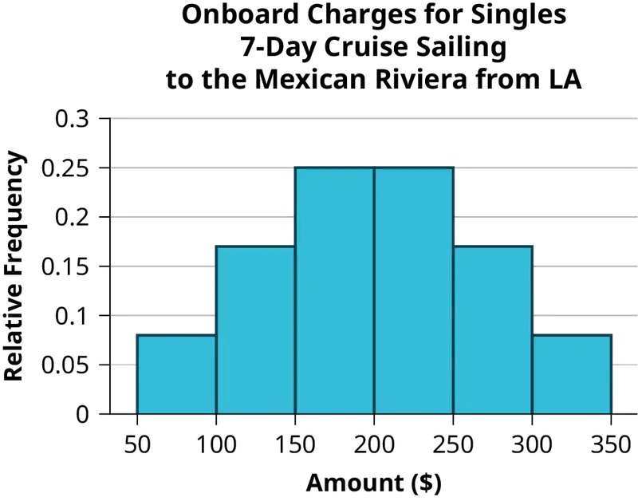
c. In the following histogram, the data values that fall on the right boundary are counted in the class interval, while values that fall on the left boundary are not counted (with the exception of the first interval where values on both boundaries are included).
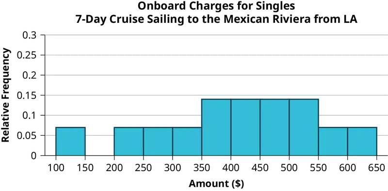
d. Compare the two graphs:
i. Answers may vary. Possible answers include:
- Both graphs have a single peak.
- Both graphs use class intervals with width equal to $50.
ii. Answers may vary. Possible answers include:
- The couples graph has a class interval with no values.
- It takes almost twice as many class intervals to display the data for couples.
iii. Answers may vary. Possible answers include: The graphs are more similar than different because the overall patterns for the graphs are the same.
e. Answers may vary.
f. Compare the graph for the Singles with the new graph for the Couples:
i. - Both graphs have a single peak. - Both graphs display 6 class intervals. - Both graphs show the same general pattern.
ii. Answers may vary. Possible answers include: Although the width of the class intervals for couples is double that of the class intervals for singles, the graphs are more similar than they are different.
g. Answers may vary. Possible answers include: You are able to compare the graphs interval by interval. It is easier to compare the overall patterns with the new scale on the Couples graph. Because a couple represents two individuals, the new scale leads to a more accurate comparison.
h. Answers may vary. Possible answers include: Based on the histograms, it seems that spending does not vary much from singles to individuals who are part of a couple. The overall patterns are the same. The range of spending for couples is approximately double the range for individuals.
78. Twenty-five randomly selected students were asked the number of movies they watched the previous week. The results are as follows.
Table 2.72
| # of movies | Frequency | Relative Frequency | Cumulative Relative Frequency |
|---|---|---|---|
| 0 | 5 | ||
| 1 | 9 | ||
| 2 | 6 | ||
| 3 | 4 | ||
| 4 | 1 |
- Construct a histogram of the data.
- Complete the columns of the chart.
Use the following information to answer the next two exercises: Suppose 111 people who shopped in a special T-shirt store were asked the number of T-shirts they own costing more than $19 each.
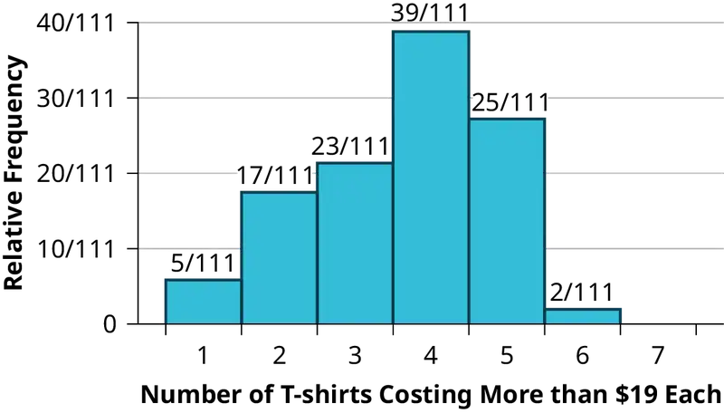
79. The percentage of people who own at most three T-shirts costing more than $19 each is approximately:
- 21
- 59
- 41
- Cannot be determined
Answer
c
80. If the data were collected by asking the first 111 people who entered the store, then the type of sampling is:
- cluster
- simple random
- stratified
- convenience
81. Following are the rates of unmarried adults for the 50 U.S. states and Washington, DC.
Table 2.73
| State | Percent (%) | State | Percent (%) | State | Percent (%) |
|---|---|---|---|---|---|
| Alabama | 32.2 | Kentucky | 31.3 | North Dakota | 27.2 |
| Alaska | 24.5 | Louisiana | 31.0 | Ohio | 29.2 |
| Arizona | 24.3 | Maine | 26.8 | Oklahoma | 30.4 |
| Arkansas | 30.1 | Maryland | 27.1 | Oregon | 26.8 |
| California | 24.0 | Massachusetts | 23.0 | Pennsylvania | 28.6 |
| Colorado | 21.0 | Michigan | 30.9 | Rhode Island | 25.5 |
| Connecticut | 22.5 | Minnesota | 24.8 | South Carolina | 31.5 |
| Delaware | 28.0 | Mississippi | 34.0 | South Dakota | 27.3 |
| Washington, DC | 22.2 | Missouri | 30.5 | Tennessee | 30.8 |
| Florida | 26.6 | Montana | 23.0 | Texas | 31.0 |
| Georgia | 29.6 | Nebraska | 26.9 | Utah | 22.5 |
| Hawaii | 22.7 | Nevada | 22.4 | Vermont | 23.2 |
| Idaho | 26.5 | New Hampshire | 25.0 | Virginia | 26.0 |
| Illinois | 28.2 | New Jersey | 23.8 | Washington | 25.5 |
| Indiana | 29.6 | New Mexico | 25.1 | West Virginia | 32.5 |
| Iowa | 28.4 | New York | 23.9 | Wisconsin | 26.3 |
| Kansas | 29.4 | North Carolina | 27.8 | Wyoming | 25.1 |
Construct a bar graph of the unmarried adult rates of your state and the four states closest to your state. Hint: Label the x-axis with the states.
Answer
Answers will vary.
2.3 Measures of the Location of the Data¶
82. The median age for Black people in the U.S. is 30.9 years; for U.S. White people it is 42.3 years.
- Based upon this information, give two reasons why the median age for Black people could be lower than the median age for White people.
- Does the lower median age for Black people necessarily mean that Black people die younger than White people? Why or why not?
- How might it be possible for Black people and White people to die at approximately the same age, but for the median age for White people to be higher?
83. Six hundred adult Americans were asked by telephone poll, "What do you think constitutes a middle-class income?" The results are in Table 2.74. Also, include left endpoint, but not the right endpoint.
Table 2.74
| Salary ($) | Relative Frequency |
|---|---|
| < 20,000 | 0.02 |
| 20,000–25,000 | 0.09 |
| 25,000–30,000 | 0.19 |
| 30,000–40,000 | 0.26 |
| 40,000–50,000 | 0.18 |
| 50,000–75,000 | 0.17 |
| 75,000–99,999 | 0.02 |
| 100,000+ | 0.01 |
a. What percentage of the survey answered "not sure"?
b. What percentage think that middle-class is from $25,000 to $50,000?
c. Construct a histogram of the data.
i. Should all bars have the same width, based on the data? Why or why not?
ii. How should the <20,000 and the 100,000+ intervals be handled? Why?
d. Find the 40th and 80th percentiles
e. Construct a bar graph of the data
Answer
a. 1 – (0.02+0.09+0.19+0.26+0.18+0.17+0.02+0.01) = 0.06
b. 0.19+0.26+0.18 = 0.63
c. Answers may vary.
d. 40th percentile will fall between 30,000 and 40,000
80th percentile will fall between 50,000 and 75,000
e. Answers may vary.
84. Given the following box plot:
a. which quarter has the smallest spread of data? What is that spread?
b. which quarter has the largest spread of data? What is that spread?
c. find the interquartile range (IQR).
d. are there more data in the interval 5–10 or in the interval 10–13? How do you know this?
e. which interval has the fewest data in it? How do you know this?
i. 0–2
ii. 2–4
iii. 10–12
iv. 12–13
v. need more information
85. The following box plot shows the U.S. population for a certain year.
- Are there fewer or more children (age 17 and under) than senior citizens (age 65 and over)? How do you know?
- 12.6% are age 65 and over. Approximately what percentage of the population are working age adults (above age 17 to age 65)?
Answer
- more children; the left whisker shows that 25% of the population are children 17 and younger. The right whisker shows that 25% of the population are adults 50 and older, so adults 65 and over represent less than 25%.
- 62.4%
2.4 Box Plots¶
86. In a survey of 20-year-olds in China, Germany, and the United States, people were asked the number of foreign countries they had visited in their lifetime. The following box plots display the results.
- In complete sentences, describe what the shape of each box plot implies about the distribution of the data collected.
- Have more U.S. citizens or more Germans surveyed been to over eight foreign countries?
- Compare the three box plots. What do they imply about the foreign travel of 20-year-old residents of the three countries when compared to each other?
87. Given the following box plot, answer the questions.
- Think of an example (in words) where the data might fit into the above box plot. In 2–5 sentences, write down the example.
- What does it mean to have the first and second quartiles so close together, while the second to third quartiles are far apart?
Answer
- Answers will vary. Possible answer: State University conducted a survey to see how involved its students are in community service. The box plot shows the number of community service hours logged by participants over the past year.
- Because the first and second quartiles are close, the data in this quarter is very similar. There is not much variation in the values. The data in the third quarter is much more variable, or spread out. This is clear because the second quartile is so far away from the third quartile.
88. Given the following box plots, answer the questions.
![This shows two boxplots graphed over number lines from 0 to 7. The first whisker in the data 1 boxplot extends from 0 to 2. The box begins at the firs quartile, 2, and ends at the third quartile, 5. A vertical, dashed line marks the median at 4. The second whisker extends from the third quartile to the largest value, 7. The first whisker in the data 2 box plot extends from 0 to 1.3. The box begins at the first quartile, 1.3, and ends at the third quartile, 2.5. A vertical, dashed line marks the medial at 2. The second whisker extends from the third quartile to the largest value, 7.](img/fig-ch02-13-06.webp)
a. In complete sentences, explain why each statement is false.
i. Data 1 has more data values above two than Data 2 has above two.
ii. The data sets cannot have the same mode.
iii. For Data 1, there are more data values below four than there are above four.
b. For which group, Data 1 or Data 2, is the value of “7” more likely to be an outlier? Explain why in complete sentences.
89. A survey was conducted of 130 purchasers of new BMW 3 series cars, 130 purchasers of new BMW 5 series cars, and 130 purchasers of new BMW 7 series cars. In it, people were asked the age they were when they purchased their car. The following box plots display the results.
![This shows three boxplots graphed over a number line from 25 to 80. The first whisker on the BMW 3 plot extends from 25 to 30. The box begins at the firs quartile, 30 and ends at the thir quartile, 41. A verical, dashed line marks the median at 34. The second whisker extends from the third quartile to 66. The first whisker on the BMW 5 plot extends from 31 to 40. The box begins at the firs quartile, 40, and ends at the third quartile, 55. A vertical, dashed line marks the median at 41. The second whisker extends from 55 to 64. The first whisker on the BMW 7 plot extends from 35 to 41. The box begins at the first quartile, 41, and ends at the third quartile, 59. A vertical, dashed line marks the median at 46. The second whisker extends from 59 to 68.](img/fig-ch02-13-07.webp)
a. In complete sentences, describe what the shape of each box plot implies about the distribution of the data collected for that car series.
b. Which group is most likely to have an outlier? Explain how you determined that.
c. Compare the three box plots. What do they imply about the age of purchasing a BMW from the series when compared to each other?
d. Look at the BMW 5 series. Which quarter has the smallest spread of data? What is the spread?
e. Look at the BMW 5 series. Which quarter has the largest spread of data? What is the spread?
f. Look at the BMW 5 series. Estimate the interquartile range (IQR).
g. Look at the BMW 5 series. Are there more data in the interval 31 to 38 or in the interval 45 to 55? How do you know this?
h. Look at the BMW 5 series. Which interval has the fewest data in it? How do you know this?
i. 31–35
ii. 38–41
iii. 41–64
Answer
- Each box plot is spread out more in the greater values. Each plot is skewed to the right, so the ages of the top 50% of buyers are more variable than the ages of the lower 50%.
- The BMW 3 series is most likely to have an outlier. It has the longest whisker.
- Comparing the median ages, younger people tend to buy the BMW 3 series, while older people tend to buy the BMW 7 series. However, this is not a rule, because there is so much variability in each data set.
- The second quarter has the smallest spread. There seems to be only a three-year difference between the first quartile and the median.
- The third quarter has the largest spread. There seems to be approximately a 14-year difference between the median and the third quartile.
- IQR ~ 17 years
- There is not enough information to tell. Each interval lies within a quarter, so we cannot tell exactly where the data in that quarter is concentrated.
- The interval from 31 to 35 years has the fewest data values. Twenty-five percent of the values fall in the interval 38 to 41, and 25% fall between 41 and 64. Since 25% of values fall between 31 and 38, we know that fewer than 25% fall between 31 and 35.
90. Twenty-five randomly selected students were asked the number of movies they watched the previous week. The results are as follows:
Table 2.75
| # of movies | Frequency |
|---|---|
| 0 | 5 |
| 1 | 9 |
| 2 | 6 |
| 3 | 4 |
| 4 | 1 |
Construct a box plot of the data.
2.5 Measures of the Center of the Data¶
91. The countries with the highest rates of obesity in the world have obesity rates that range from 11.4% to 74.6%. This data is summarized in the following table.
Table 2.76
| Percent of Population | Number of Countries |
|---|---|
| 11.4–20.45 | 29 |
| 20.45–29.45 | 13 |
| 29.45–38.45 | 4 |
| 38.45–47.45 | 0 |
| 47.45–56.45 | 2 |
| 56.45–65.45 | 1 |
| 65.45–74.45 | 0 |
| 74.45–83.45 | 1 |
- What is the best estimate of the average obesity percentage for these countries?
- The United States has an average obesity rate of 33.9%. Is this rate above average or below?
- How does the United States compare to other countries?
92. Table 2.77 gives the percent of children under five considered to be underweight. What is the best estimate for the mean percentage of underweight children?
Table 2.77
| Percent of Underweight Children | Number of Countries |
|---|---|
| 16–21.45 | 23 |
| 21.45–26.9 | 4 |
| 26.9–32.35 | 9 |
| 32.35–37.8 | 7 |
| 37.8–43.25 | 6 |
| 43.25–48.7 | 1 |
Answer
The mean percentage, \(\bar{x}=\frac{1328.65}{50}=26.57\)
2.6 Skewness and the Mean, Median, and Mode¶
93. The median age of the U.S. population in 1980 was 30.0 years. In 1991, the median age was 33.1 years.
- What does it mean for the median age to rise?
- Give two reasons why the median age could rise.
- For the median age to rise, is the actual number of children less in 1991 than it was in 1980? Why or why not?
2.7 Measures of the Spread of the Data¶
Use the following information to answer the next nine exercises: The population parameters below describe the full-time equivalent number of students (FTES) each year at a local community college over a 29-year period.
- μ = 1000 FTES
- median = 1,014 FTES
- σ = 474 FTES
- first quartile = 528.5 FTES
- third quartile = 1,447.5 FTES
- n = 29 years
94. A sample of 11 years is taken. About how many are expected to have a FTES of 1014 or above? Explain how you determined your answer.
Answer
The median value is the middle value in the ordered list of data values. The median value of a set of 11 will be the 6th number in order. Six years will have totals at or above the median.
95. 75% of all years have an FTES:
- at or below: _____
- at or above: _____
96. The population standard deviation = _____
Answer
474 FTES
97. What percent of the FTES were from 528.5 to 1447.5? How do you know?
98. What is the IQR? What does the IQR represent?
Answer
919
99. How many standard deviations away from the mean is the median?
Additional Information: The population FTES for a specific six-year period was given in an updated report. The data are reported here.
Table 2.78
| Year | 1 | 2 | 3 | 4 | 5 | 6 |
| Total FTES | 1,585 | 1,690 | 1,735 | 1,935 | 2,021 | 1,890 |
100. Calculate the mean, median, standard deviation, the first quartile, the third quartile and the IQR. Round to one decimal place.
Answer
- mean = 1,809.3
- median = 1,812.5
- standard deviation = 151.2
- first quartile = 1,690
- third quartile = 1,935
- IQR = 245
101. What additional information is needed to construct a box plot for the FTES for Years 1 to 6 and a box plot for the 29-year period shown earlier?
102. Compare the IQR for the previous 29-year period with the IQR for the six-year period shown in Table 2.78. Why do you suppose the IQRs are so different?
Answer
Hint: Think about the number of years covered by each time period and what happened to higher education during those periods.
103. Three students were applying to the same graduate school. They came from schools with different grading systems. Which student had the best GPA when compared to other students at his school? Explain how you determined your answer.
Table 2.79
| Student | GPA | School Average GPA | School Standard Deviation |
|---|---|---|---|
| Thuy | 2.7 | 3.2 | 0.8 |
| Vichet | 87 | 75 | 20 |
| Kamala | 8.6 | 8 | 0.4 |
104. A music school has budgeted to purchase three musical instruments. They plan to purchase a piano costing $3,000, a guitar costing $550, and a drum set costing $600. The mean cost for a piano is $4,000 with a standard deviation of $2,500. The mean cost for a guitar is $500 with a standard deviation of $200. The mean cost for drums is $700 with a standard deviation of $100. Which cost is the lowest, when compared to other instruments of the same type? Which cost is the highest when compared to other instruments of the same type. Justify your answer.
Answer
For pianos, the cost of the piano is 0.4 standard deviations BELOW the mean. For guitars, the cost of the guitar is 0.25 standard deviations ABOVE the mean. For drums, the cost of the drum set is 1.0 standard deviations BELOW the mean. Of the three, the drums cost the lowest in comparison to the cost of other instruments of the same type. The guitar costs the most in comparison to the cost of other instruments of the same type.
105. An elementary school class ran one mile with a mean of 11 minutes and a standard deviation of three minutes. Rachel, a student in the class, ran one mile in eight minutes. A junior high school class ran one mile with a mean of nine minutes and a standard deviation of two minutes. Kenji, a student in the class, ran 1 mile in 8.5 minutes. A high school class ran one mile with a mean of seven minutes and a standard deviation of four minutes. Nedda, a student in the class, ran one mile in eight minutes.
- Why is Kenji considered a better runner than Nedda, even though Nedda ran faster than he?
- Who is the fastest runner with respect to their class? Explain why.
106. A selection of countries has poverty rates that range from 11.4% to 74.6%. This data is summarized in Table 2.76.
Table 2.80
| Percent of Population | Number of Countries |
|---|---|
| 11.4–20.45 | 29 |
| 20.45–29.45 | 13 |
| 29.45–38.45 | 4 |
| 38.45–47.45 | 0 |
| 47.45–56.45 | 2 |
| 56.45–65.45 | 1 |
| 65.45–74.45 | 0 |
| 74.45–83.45 | 1 |
What is the best estimate of the average poverty percentage for these countries? What is the standard deviation for the listed poverty rates? The United States has an average poverty rate of 33.9%. Is this rate above average or below? How “unusual” is the United States’ rate compared to the average rate? Explain.
Answer
- \(\bar{x}=23.32\)
- Using the TI 83/84, we obtain a standard deviation of: \(s_{x}=12.95.\)
- The poverty rate of the United States is 10.58% higher than the average rate.
- Since the standard deviation is 12.95, we see that 23.32 + 12.95 = 36.27 is the poverty percentage that is one standard deviation from the mean. The United States rate is slightly less than one standard deviation from the mean. Therefore, we can assume that the United States does not have an unusually high percentage of people experiencing poverty.
107. Table 2.81 gives the percent of children under five considered to be underweight.
Table 2.81
| Percent of Underweight Children | Number of Countries |
|---|---|
| 16–21.45 | 23 |
| 21.45–26.9 | 4 |
| 26.9–32.35 | 9 |
| 32.35–37.8 | 7 |
| 37.8–43.25 | 6 |
| 43.25–48.7 | 1 |
What is the best estimate for the mean percentage of underweight children? What is the standard deviation? Which interval(s) could be considered unusual? Explain.
Bringing It Together¶
2.4 Box Plots¶
108. A certain small town in the United states has a population of 27,873 people. Their ages are as follows:
Table 2.82
| Age Group | Percent of Community |
|---|---|
| 0–17 | 18.9 |
| 18–24 | 8.0 |
| 25–34 | 22.8 |
| 35–44 | 15.0 |
| 45–54 | 13.1 |
| 55–64 | 11.9 |
| 65+ | 10.3 |
- Construct a histogram of the age distribution for this small town. The bars will not be the same width for this example. Why not? What impact does this have on the reliability of the graph?
- What percentage of the community is under age 35?
- Which box plot most resembles the information above?
Answer
- For graph, answers may vary.
- 49.7% of the community is under the age of 35.
- Based on the information in the table, graph (a) most closely represents the data.
2.5 Measures of the Center of the Data¶
109. Javier and Ercilia are supervisors at a shopping mall. Each was given the task of estimating the mean distance that shoppers live from the mall. They each randomly surveyed 100 shoppers. The samples yielded the following information.
Table 2.83
| Javier | Ercilia | |
|---|---|---|
| \(\bar{x}\) | 6.0 miles | 6.0 miles |
| \(s\) | 4.0 miles | 7.0 miles |
a. How can you determine which survey was correct ?
b. Explain what the difference in the results of the surveys implies about the data.
c. If the two histograms depict the distribution of values for each supervisor, which one depicts Ercilia's sample? How do you know?
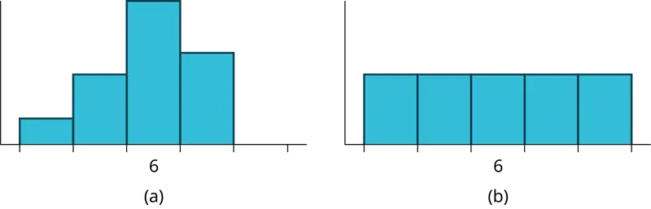
d. If the two box plots depict the distribution of values for each supervisor, which one depicts Ercilia’s sample? How do you know?
![This shows two horizontal boxplots. The first boxplot is graphed over a number line from 0 to 21. The first whisker extends from 0 to 1. The box begins at the first quartile, 1, and ends at the third quartile, 14. A vertical, dashed line marks the median at 6. The second whisker extends from the third quartile to the largest value, 21. The second boxplot is graphed over a number line from 0 to 12. The first whisker extends from 0 to 4. The box begins at the first quartile, 4, and ends at the third quartile, 9. A vertical, dashed line marks the median at 6. The second whisker extends from the third quartile to the largest value, 12.](img/fig-ch02-13-10.webp)
Use the following information to answer the next three exercises: We are interested in the number of years students in a particular elementary statistics class have lived in California. The information in the following table is from the entire section.
Table 2.84
| Number of years | Frequency | Number of years | Frequency |
|---|---|---|---|
| 7 | 1 | 22 | 1 |
| 14 | 3 | 23 | 1 |
| 15 | 1 | 26 | 1 |
| 18 | 1 | 40 | 2 |
| 19 | 4 | 42 | 2 |
| 20 | 3 | ||
| Total = 20 |
110. What is the IQR?
- 8
- 11
- 15
- 35
Answer
a
111. What is the mode?
- 19
- 19.5
- 14 and 20
- 22.65
112. Is this a sample or the entire population?
- sample
- entire population
- neither
Answer
b
2.7 Measures of the Spread of the Data¶
113. Twenty-five randomly selected students were asked the number of movies they watched the previous week. The results are as follows:
Table 2.85
| # of movies | Frequency |
|---|---|
| 0 | 5 |
| 1 | 9 |
| 2 | 6 |
| 3 | 4 |
| 4 | 1 |
- Find the sample mean \(\bar{x}\).
- Find the approximate sample standard deviation, s.
Answer
- 1.48
- 1.12
114. Forty randomly selected students were asked the number of pairs of sneakers they owned. Let X = the number of pairs of sneakers owned. The results are as follows:
Table 2.86
| X | Frequency |
|---|---|
| 1 | 2 |
| 2 | 5 |
| 3 | 8 |
| 4 | 12 |
| 5 | 12 |
| 6 | 0 |
| 7 | 1 |
- Find the sample mean \(\bar{x}\)
- Find the sample standard deviation, s
- Construct a histogram of the data.
- Complete the columns of the chart.
- Find the first quartile.
- Find the median.
- Find the third quartile.
- Construct a box plot of the data.
- What percent of the students owned at least five pairs?
- Find the 40th percentile.
- Find the 90th percentile.
- Construct a line graph of the data
- Construct a stemplot of the data
115. Following are the published weights (in pounds) of all of the team members of the San Francisco 49ers from a previous year.
177; 205; 210; 210; 232; 205; 185; 185; 178; 210; 206; 212; 184; 174; 185; 242; 188; 212; 215; 247; 241; 223; 220; 260; 245; 259; 278; 270; 280; 295; 275; 285; 290; 272; 273; 280; 285; 286; 200; 215; 185; 230; 250; 241; 190; 260; 250; 302; 265; 290; 276; 228; 265
a. Organize the data from smallest to largest value.
b. Find the median.
c. Find the first quartile.
d. Find the third quartile.
e. Construct a box plot of the data.
f. The middle 50% of the weights are from _______ to _______.
g. If our population were all professional football players, would the above data be a sample of weights or the population of weights? Why?
h. Assume the population was the San Francisco 49ers. Find:
i. the population mean, μ.
ii. the population standard deviation, σ.
iii. the weight that is two standard deviations below the mean.
iv. When Steve Young, quarterback, played football, he weighed 205 pounds. How many standard deviations above or below the mean was he?
i. That same year, the mean weight for the Dallas Cowboys was 240.08 pounds with a standard deviation of 44.38 pounds. Emmit Smith weighed in at 209 pounds. With respect to his team, who was lighter, Smith or Young? How did you determine your answer?
Answer
a. 174; 177; 178; 184; 185; 185; 185; 185; 188; 190; 200; 205; 205; 206; 210; 210; 210; 212; 212; 215; 215; 220; 223; 228; 230; 232; 241; 241; 242; 245; 247; 250; 250; 259; 260; 260; 265; 265; 270; 272; 273; 275; 276; 278; 280; 280; 285; 285; 286; 290; 290; 295; 302
b. 241
c. 205.5
d. 272.5
e.
f. 205.5, 272.5
g. sample
h. i. 236.34
ii. 37.50
iii. 161.34
iv. 0.84 std. dev. below the mean
i. Young
116. One hundred teachers attended a seminar on mathematical problem solving. The attitudes of a representative sample of 12 of the teachers were measured before and after the seminar. A positive number for change in attitude indicates that a teacher's attitude toward math became more positive. The 12 change scores are as follows:
3
8
–1
2
0
5
–3
1
–1
6
5
–2
- What is the mean change score?
- What is the standard deviation for this population?
- What is the median change score?
- Find the change score that is 2.2 standard deviations below the mean.
117. Refer to Figure 2.63 determine which of the following are true and which are false. Explain your solution to each part in complete sentences.
![This shows three graphs. The first is a histogram with a mode of 3 and fairly symmetrical distribution between 1 (minimum value) and 5 (maximum value). The second graph is a histogram with peaks at 1 (minimum value) and 5 (maximum value) with 3 having the lowest frequency. The third graph is a box plot. The first whisker extends from 0 to 1. The box begins at the firs quartile, 1, and ends at the third quartile,6. A vertical, dashed line marks the median at 3. The second whisker extends from 6 on.](img/fig-ch02-13-05.webp)
- The medians for all three graphs are the same.
- We cannot determine if any of the means for the three graphs is different.
- The standard deviation for graph b is larger than the standard deviation for graph a.
- We cannot determine if any of the third quartiles for the three graphs is different.
Answer
- True
- True
- True
- False
118. In a recent issue of the IEEE Spectrum, 84 engineering conferences were announced. Four conferences lasted two days. Thirty-six lasted three days. Eighteen lasted four days. Nineteen lasted five days. Four lasted six days. One lasted seven days. One lasted eight days. One lasted nine days. Let X = the length (in days) of an engineering conference.
- Organize the data in a chart.
- Find the median, the first quartile, and the third quartile.
- Find the 65th percentile.
- Find the 10th percentile.
- Construct a box plot of the data.
- The middle 50% of the conferences last from _______ days to _______ days.
- Calculate the sample mean of days of engineering conferences.
- Calculate the sample standard deviation of days of engineering conferences.
- Find the mode.
- If you were planning an engineering conference, which would you choose as the length of the conference: mean; median; or mode? Explain why you made that choice.
- Give two reasons why you think that three to five days seem to be popular lengths of engineering conferences.
119. A survey of enrollment at 35 community colleges across the United States yielded the following figures:
6414; 1550; 2109; 9350; 21828; 4300; 5944; 5722; 2825; 2044; 5481; 5200; 5853; 2750; 10012; 6357; 27000; 9414; 7681; 3200; 17500; 9200; 7380; 18314; 6557; 13713; 17768; 7493; 2771; 2861; 1263; 7285; 28165; 5080; 11622
- Organize the data into a chart with six intervals of equal width from 0 to 30,000. Label the two columns "Enrollment" and "Frequency."
- Construct a histogram of the data.
- If you were to build a new community college, which piece of information would be more valuable: the mode or the mean?
- Calculate the sample mean.
- Calculate the sample standard deviation.
- A school with an enrollment of 8000 would be how many standard deviations away from the mean?
Answer
a. Table 2.87
| Enrollment | Frequency |
|---|---|
| 1000-5000 | 10 |
| 5000-10000 | 16 |
| 10000-15000 | 3 |
| 15000-20000 | 3 |
| 20000-25000 | 1 |
| 25000-30000 | 2 |
b. Answers may vary.
c. mode
d. 8628.74
e. 6943.88
f. –0.09
Use the following information to answer the next two exercises. X = the number of days per week that 100 clients use a particular exercise facility.
Table 2.88
| x | Frequency |
|---|---|
| 0 | 3 |
| 1 | 12 |
| 2 | 33 |
| 3 | 28 |
| 4 | 11 |
| 5 | 9 |
| 6 | 4 |
120. The 80th percentile is _____
- 5
- 80
- 3
- 4
121. The number that is 1.5 standard deviations BELOW the mean is approximately _____
- 0.7
- 4.8
- –2.8
- Cannot be determined
Answer
a
122. Suppose that a publisher conducted a survey asking adult consumers the number of fiction paperback books they had purchased in the previous month. The results are summarized in the Table 2.89.
Table 2.89
| # of books | Freq. | Rel. Freq. |
|---|---|---|
| 0 | 18 | |
| 1 | 24 | |
| 2 | 24 | |
| 3 | 22 | |
| 4 | 15 | |
| 5 | 10 | |
| 7 | 5 | |
| 9 | 1 |
- Are there any outliers in the data? Use an appropriate numerical test involving the IQR to identify outliers, if any, and clearly state your conclusion.
- If a data value is identified as an outlier, what should be done about it?
- Are any data values further than two standard deviations away from the mean? In some situations, statisticians may use this criteria to identify data values that are unusual, compared to the other data values. (Note that this criteria is most appropriate to use for data that is mound-shaped and symmetric, rather than for skewed data.)
- Do parts a and c of this problem give the same answer?
- Examine the shape of the data. Which part, a or c, of this question gives a more appropriate result for this data?
- Based on the shape of the data which is the most appropriate measure of center for this data: mean, median or mode?
Adapted from Introductory Statistics 2e by OpenStax, licensed under CC BY 4.0. Access the original for free at openstax.org. Changes: converted to the web reading format of The Open Book Project.